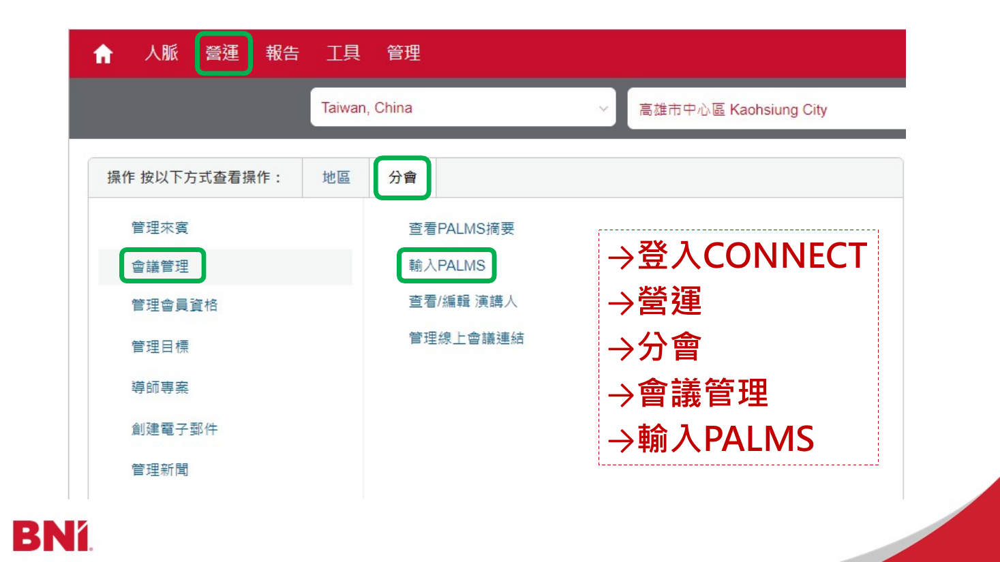
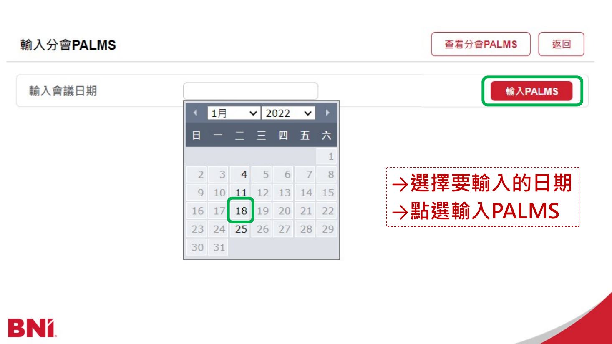
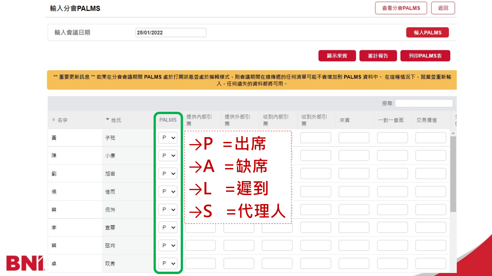
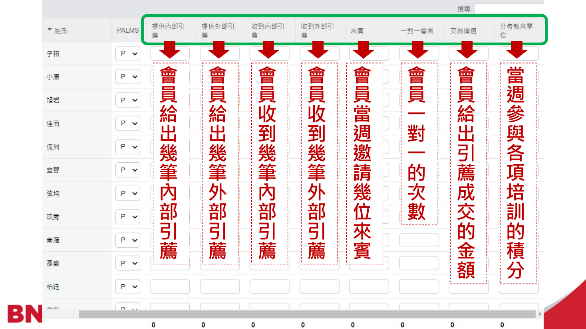
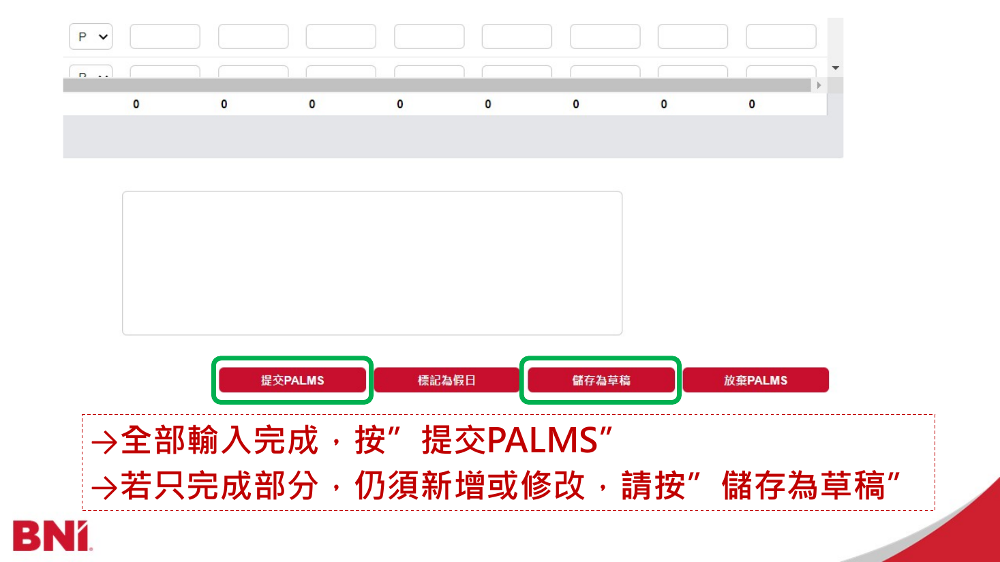

把每一項責任，
接起來。
從工作全貌，走進每一步實務。
選一個分支，找到你現在需要的做法。
副主席的工作全貌
帶領會員委員會，接住會員與分會的需要。
接任與工作全貌
認識角色、接好入口，開始第一輪工作。
3 個工作入口點選工作名稱閱讀完整教學，也可直接進入下方的小節。
每週與每月
從例會到月會，把每一週的責任接起來。
4 個工作入口點選工作名稱閱讀完整教學，也可直接進入下方的小節。
訪談與會員案件
先辨識案件，再進入訪談、判斷與後續追蹤。
5 個工作入口點選工作名稱閱讀完整教學，也可直接進入下方的小節。
換屆與實作確認
把未完成的工作交清楚，確認能獨立執行。
3 個工作入口點選工作名稱閱讀完整教學，也可直接進入下方的小節。
主持與報告參考稿
找到當次需要的講稿，整理成自己的說法。
4 個工作入口點選工作名稱閱讀完整教學，也可直接進入下方的小節。
接任資料
接任前，一起打開檔案、核對窗口與待辦。
1 個工作入口點選工作名稱閱讀完整教學，也可直接進入下方的小節。
第一次閱讀：先接起一輪工作
- 取得入口、窗口與正在進行的案件，說得出下一步由誰做。
- 完成每週點名、報告、公告與 Connect 登錄，接上會前和會後協作。
- 追蹤所有關懷與訪談，再準備第一週月會與第二週目標方案報告。
- 用實際交接清單確認能獨立完成，並核對接任要取得的資料。
接手後，你每天要能回答的問題
先理解這份工作的目的
歷任實務心得：會員委員不是警察。 你每週會接觸出席、燈號、訪談與續約資料，目的是提早看見誰尚未融入、誰使用方法卡住，以及誰看起來很積極，卻沒有真正的收穫。先問「他是不是沒有得到真實收穫？我們能怎麼幫？」再決定下一步。
制度是底線，關懷是方法，會員有收穫與分會健康才是目的。你帶領委員會守護四件事：會員有效使用 BNI、從數據找到成長機會、保護彼此信用與專業席位，以及讓重要決定由團隊按程序共同承擔。
例如一位會員燈號偏低，不要立刻宣布不續約，也不要先到公告群點名。先核對資料期間、問近況、了解他在哪個環節遇到困難，再安排適合的關懷。另一位會員帳面表現很好，也可以問他是否因此得到所需業務或人脈；分數不能替會員回答這個問題。
你和各角色怎麼合作
| 對象 | 你需要接上的工作 | 怎樣才算接上 |
|---|---|---|
| 主席、秘書財務 | 三長交流、例會、申請、款項及送件 | 彼此知道現況、下一步與需要配合的時間 |
| 會員委員會 | 訪談、關懷、回饋、投票 | 每案有人推進，委員能提出具體觀察 |
| 八長與各職長 | 會前準備、來賓追蹤、宣誓、導師及培訓 | 已把該角色要準備的事項交代清楚 |
| 董事顧問、中心區 | 正式案件確認、制度疑義、收件結果 | 保存適用的回覆與下一步，沒有把一般聊天當核准 |
| 系統維護窗口 | 帳號、任期與資料異常 | 能說明頁面、錯誤訊息及重現步驟 |
善用團隊不是把問題丟出去。交辦後，你仍要知道事情走到哪裡；遇到不知道的規則，帶著來源和具體問題與窗口確認。
副主席負責讓會員委員會的工作持續有人處理、資料正確、程序完整，並與三長保持資訊與想法的交流。
打開工作總覽時，先回答：
- 哪些事情有期限，哪一件需要先處理？
- 每一件目前由誰負責，卡在哪一步？
- 上次聯繫得到什麼回覆，下一步何時完成？
- 是還沒做、已做待回覆，還是已完成但尚未留存證明？
- 有哪些資訊需要和主席、秘書財務、董事顧問或相關職長交流？
基本工作循環：確認資料 → 指派 → 執行／聯繫 → 更新紀錄 → 檢查結果 → 接續追蹤或結案。不要只問「做了沒」，要確認下一步和完成證據。
遇到不確定的事情，先找誰確認
分會的工作安排先和主席、秘書財務及相關職長對齊；涉及中心區規範、表單或正式核准時，備妥個案資料向董事顧問或中心區窗口確認。把問題、目前資料及需要回覆的日期一起說清楚，收到回覆後留下紀錄，讓下一位接手的人也知道依據。
第一日：取得可以工作的入口
- 開啟 富聯工作台，使用副主席角色帳號並選擇本人姓名。
- 確認任期與身份正確。Admin 負責設定換屆；新任副主席接手日常工作，不以 Admin 身份代替日常登入。
- 看完全站導覽；進入需要使用的頁面時，再看該頁「操作教學」。隨時可以重看。
- 確認 BNI Connect、正式寄件信箱、Zoom、常用文件及群組的實際使用方式與窗口。
- 開啟工作總覽，盤點進行中案件、逾期工作、換屆待指派及續約地基。
- 找一件交接中的工作，指出原主責、現在狀態、最後回覆、期限與接手人。
密碼與個人 API Key 透過私密管道交接或重新設定，不填入本手冊。正式會員資料及附件依系統權限查閱。
常用入口
| 要做的事 | 工作台入口 | 檢查重點 |
|---|---|---|
| 看本週工作、待指派及期限 | 工作總覽 | 全部未完成工作都有下一步 |
| 追蹤五類訪談 | 會員案件 | 案件類型、主責、階段與文件 |
| 看已完成訪談 | 結案資料 | Word、適用的投票與歷程 |
| 查燈號及關懷線索 | 會員關懷儀表板 | 來源期間、會員與資料狀態 |
| 追蹤續約承諾 | 續約地基追蹤 | 每項條件、各期、證據與指派 |
| 準備委員會月會 | 會員委員會月會 | 月份、議程、分工及結案 |
| 核對當週出席 | 點名與出席 | 日期、現任會員、實際出席 |
| 處理待寄信 | 常用資源 → 當責信待寄 | 尚待寄出或待補資料 |
| 取得文字公版 | 常用資源 → 文稿範本 | 姓名、期間、收件對象 |
| 月度 AI 解讀 | 月度分析審閱 | 正確快照、人工審閱與發佈 |
| 補看制度與按鈕教學 | 副主席交接課程／各頁操作教學 | 制度判斷與操作分開學 |
把群組當成工作的資訊地圖
| 群組 | 要留意的事情 | 發言方式 |
|---|---|---|
| 三長群 | 主席、副主席、秘書財務協調與正式案件資料包 | 主動分享觀察、想法、需求；正式確認另留紀錄 |
| 核心群 | 核心資訊、行政配合、培訓簽到等 | 找到本次事項的負責窗口，不只閱讀訊息 |
| 會員委員會群 | 訪談表述、回饋、投票、關懷與進度 | 明確說明案件、要做的動作與日期 |
| 中心區副主席群 | 區域訊息、制度詢問 | 附具體情境與來源，不憑印象引用規定 |
| 公告群 | 核對後的全體通知、每週出席公告 | 使用適合全體閱讀的內容 |
| 來賓接龍群 | 當週來賓、代理姓名與電話 | 會前查看，當天再核對實際出席 |
| 其他職長工作群 | 跨職務準備、會員需要協助的線索 | 以掌握狀態為主；被詢問或涉及職責時參與 |
三長原則上加入分會所有群組。會員基礎常駐群另包含交流群、來賓臨時群、培訓接龍群、引薦及感謝單回報群、一對一回報群、許願池廣告群、軟性活動接龍群與所屬行政小組群。
容易誤解的地方：「來賓臨時群」對正式會員是常駐群。只有當週來賓在例會後退出或由來賓接待組移除。不要因名稱有「臨時」就自行退出。
第一日實作：接一件正在進行的工作
請舊任帶你從工作總覽進入一件未結案，指出申請或關懷原因、原主責、最後聯繫、附件、卡點與期限。接著由你說明「下一步我會請誰做什麼，什麼時候回來確認」。若只能看到一個檔案，卻不知道現在等誰，表示這件工作還沒有交清楚。
工作節奏：照這個順序循環
| 時點 | 主要工作 | 本次要留下的結果 |
|---|---|---|
| 每週例會前 | 確認點名分工、代理資訊、報告與宣誓／畢業安排 | 當週分工及已確認名單 |
| 每週例會中 | 點名與出席核對、副主席介紹及報告，依安排主持宣誓／畢業 | 當日紀錄與完成環節 |
| 每週例會後 | 核對並發出席紀錄至公告群、完成相關 Connect 登錄 | 正確公告、發布時間及登錄狀態 |
| 每週持續 | 追蹤目前所有關懷及訪談進度，處理需跟進地基與待辦 | 主責、最新回覆、下一步及日期 |
| 每月第一週 | 會員委員會月會 | 會議紀錄、分工與追蹤日期 |
| 每月第二週 | 月度領導團隊報告 | 依固定 PPT 向全體會員說明 Power of One 目標及會員委員會的可執行方案 |
| 每月其餘時間 | 落實月會分工，繼續每週案件追蹤 | 決議有人執行，卡點持續處理 |
| 個別約定到期 | 依會員各項續約地基的週期核對 | 每期結果、證據與後續安排 |
第一週月會依既有安排在當月第一場實際舉行的例會後召開，遇假日按分會公告調整。第二週領導團隊報告通常提前在核心會前會確認 Power of One 目標，使用固定 PPT 架構向全體會員報告。接任時先取得固定 PPT，確認各頁需要的內容。
用一週的情境把順序串起來
例會前，先確定本週點名委員、代理名單、報告及宣誓安排；會前會把需要其他職務協助的事提出來。例會當天兩次核對出席，完成報告與適用的主持環節。會後核對公告，再接上 Connect 的正式登錄，以及會後會分配的來賓追蹤。
週中持續查看所有關懷、訪談、回饋、投票、送件與地基。第一週另準備月會；第二週另完成 Power of One 報告；其餘週落實這兩場會議答應要做的事情。日期不同可以調整安排，但工作之間的交接不能漏掉。
每週點名、例會與公告
每週把點名、報告、公告與後續追蹤接好。先確認分工及資料，再按例會進行的順序完成各項工作。
4.1 會前準備
- 確認本週例會是否照常、日期及會議資訊。
- 確認當週負責點名及儀容觀察的 1–2 位委員。
- 核對現任會員及尚未進入月度主檔的過渡點名會員，避免新入會漏列。
- 看來賓接龍群的代理登記；這只是預先資訊，當天仍需核對是否出席。
- 準備副主席介紹與報告，將姓名、專業別、期間及數字換成當期已核對內容。
- 在八長會前會說明關懷、規範宣導、新申請、下週宣誓／畢業、續約及委員燈號等事項。
接任時與當屆八長確認會前會的時間、會議方式及資料準備期限，加入行事曆；會前先備妥需要報告或請其他職務協助的事項。
八長會前會：交代需要協作的事項
建議依關懷、宣導、新申請、宣誓／畢業、續約、委員狀態及其他事項整理。每件都說明「發生什麼、誰要知道、下一步是什麼」。需要跨職務協助的關懷，只說對方執行所需的摘要。
例如，不能只說「下週有新會員宣誓」。要確認名單已通過適用程序，讓秘書財務可以更新 PPT、來賓接待組可以準備 Zoom 聚焦，並確認會員包、正式誓詞、分享與拍照安排。畢業名單則先與導師協調員核對。
4.2 當日點名與出席核對
- 負責委員於 06:30、07:00 核對 Zoom 與會者列表。
- 記錄出席、遲到／早退、代理及缺席；代理需確認實際上線。
- Zoom 聊天的簽到／簽退供核對，不取代委員實際點名。
- 名牌、PIN 章、服裝、開啟畫面是商務環境觀察，不直接轉成缺席、扣分或續約負面條件。
- 會員簡報採當期設定；目前富聯為 25 秒。第一輪未講到者由主席在最後確認，最後仍未完成者依現行出席規則處理。
- 紀錄有差異時，以當週負責委員紀錄為主要依據；有異議則由會員委員會協調並保存核對脈絡。
紀錄不同或遇到例外時怎麼判斷
| 情況 | 實際處理 | 原因與界線 |
|---|---|---|
| 代理人已完成接龍 | 依聯絡資料與與會者列表核對是否真的上線 | 接龍是預先安排，不是出席證明 |
| 聊天有簽到，名單卻未看到 | 請負責委員依現場紀錄查明 | 聊天只能輔助，不能直接覆蓋人工核對 |
| 兩位委員的紀錄不同 | 由當週負責記錄委員先核對 | 留下差異與修正原因；仍有異議交委員會協調 |
| 第一輪沒有完成 25 秒簡報 | 等全體完成，由主席最後確認 | 最後仍未完成，依富聯現行規則直接列缺席 |
| 偶發網路或鏡頭故障 | 記錄商務環境觀察，必要時提供協助 | 不因偶發技術問題影響會員權益 |
| 同一會員長期未配合儀容或鏡頭 | 安排關懷，了解實際原因 | 不把觀察欄位當缺席、扣分或續約負面條件 |
歷任實務心得： 正向提醒可以說明配合的好處，例如全員開鏡頭能營造更好的商務環境。單次或少數未做到時，向全體提醒即可；需要理解個別狀況時，交由委員關懷，不在公開報告責備。
六個月出席規則
| 項目 | 現行教學重點 | 來源 |
|---|---|---|
| 遲到及早退 | 六個月累計 3 次折算 1 次缺席 | 中心區現行說明 |
| 缺席 | 最多 3 次，第 4 次開放專業類別 | 富聯現行決議 |
| 代理 | 最多 8 次，第 9 次開放專業類別 | 高屏區會員守則 V9.1 |
| 未完成會員簡報 | 主席最後確認後仍未完成，直接列缺席 | 富聯現行決議 |
| 病假 | 中心區現行說明已無病假，不能出席仍須安排代理 | 中心區出席說明 |
核對的是滾動六個月，不是每到新任期就把前面紀錄歸零。代理和缺席分開計數；系統提醒不等於已寄出正式通知或已完成會員資格處置。
4.3 副主席介紹與會員委員報告
例會開始時的副主席介紹，說明你的姓名、專業與職責；中心區職責重點要完整保留。後面的副主席報告才放本屆目標、每月更新的成果及當週事項。兩段用途不同，不把統計數字插進職責說明來取代其內容。
準備本週的稿件與畫面
先開啟本週 PPT 和工作稿，把當屆目標、成果統計起訖、上週出席日期、待商訪進度與徵求行業逐一核對。半年成果要用同一個半年期間，創會累計則另有自己的截止日與來源。每一項數據都要能對應到當次資料。
核心團隊提出需要提醒的議題後，先整理三件事：會員目前容易在哪裡誤解、希望大家採取什麼動作、為什麼這個動作有幫助。再寫成你說得自然的段落。試讀一遍，確認會員聽完能理解原因並知道下一步。
最後對著 PPT 試讀一次。遇到待商訪為零、沒有安排宣誓、當期徵求行業改變，就調整句子與畫面；不要只改稿件第一個名字或第一個數字。完整參考稿在「主持與報告參考稿」各頁可查閱。
上台報告的內容
完整示例見 每週報告參考稿。
這是每週面向全體會員的副主席報告，有可修改的公版 PPT。第二週 Power of One 月度領導團隊報告另有固定 PPT 架構，兩者分開準備。
準備每週報告時，可以依下列內容組織自己的說法：
- 感謝主席、自我介紹。
- 本屆分會人數與綠燈目標。
- 半年來賓、商務交流、引薦單數、引薦金額及創會累計成果，感謝夥伴。
- 會員委員報告，請全體查看上週出缺席畫面。
- 分會地基與商務環境提醒：06:30 前出席、簽到退、正裝、名牌、PIN 章及鏡頭。
- 續約提醒：紅燈有條件續約、灰燈不續約，到期日前兩個月的 15 日完成申請及繳費。
- 等待商訪的新會員進度。
- 當期需要徵求的行業，邀請夥伴協助咖啡會議。
- 把主持棒交還主席。
每月更新： 核對統計來源與期間，同步更新文字稿及 PPT 數據，並確認當屆目標是否有調整。
每週上台前檢核建議： 看文字稿與公版 PPT 是否一致，上週出席畫面日期是否正確，商訪進度及徵求名單是否有變動。待商訪為零時調整句子；上台前確認姓名與數據都已填妥。
不定期宣導： 依核心團隊當次討論，確認哪些議題重要、需要提醒全體會員，再核對作法並撰寫當次宣導，配合 PPT 呈現。依當週需要決定宣導內容與長度。
需要參考表達方式時，可查看 宣導參考稿，練習把「為什麼要提醒」和「希望會員怎麼做」說清楚。
完成標準：自己準備的報告內容與當月數據正確、當週畫面及進度已核對、核心討論需宣導的議題已有對應文案，使用公版 PPT 完成報告並交回主席。接任時向前任取得每週報告 PPT，確認各頁要更新的資料。
公開續約提醒之外，有個別地基的會員仍須符合系統所記錄條件；出席狀況的判定與登錄方式，請見本章「當日點名與出席核對」。
4.4 宣誓與畢業
- 新會員與續約宣誓名單先經會員委員會確認，再於會前會提出。
- 秘書財務把環節加入例會 PPT，來賓接待組準備 Zoom 聚焦；副主席帶領宣誓。
- 畢業名單由導師協調員提出，副主席確認安排並主持。
- 使用 例會發言稿，副主席介紹保留中心區職責重點；當月數字放在報告段落。
- 開啟 例會主持參考稿，準備當週名單、專業別、引薦人、導師及核對後的貢獻數據。
- 續約環節可安排貢獻介紹、宣誓與合照；新會員環節另準備專業介紹、感想分享及引薦人／導師合照；畢業環節準備祝賀、感謝導師與收穫分享。先和參與人員確認順序，再寫好銜接。
- 試讀時核對同一人物從介紹到合照都用同一姓名、各人導師沒有串錯，未填欄位及未使用段落先清除。
- 正式誓詞按當次確認 PPT／文字宣讀，不由主持銜接稿自行補寫；副主席須等開麥、逐點回應、分享及合照完成，再交回主席。
4.5 會後公告與資料登錄
- 核對當週日期、人數、名單及六個月累計期間。對缺資料或期間錯誤先查明，不能用 0 補上。
- 從文稿範本準備「每週出席紀錄公告」，再核對姓名與數字。
- 發到富聯 LINE 公告群；公告不包含會員電話或訪談私密內容。
- 留存發布時間。產生或複製文案不等於已發布。
- 依既有分工在 BNI Connect 登錄當週出缺席、檢查會員填報異常，並依核心群執行秘書提供的培訓簽到表登錄培訓積分。
- 點名頁不是 PALMS 正式統計替代品；後續分析以 Connect 匯出並核對的 PALMS 為準。
- 參加八長會後會，復盤例會、確認來賓簽單與後續追蹤人；需要咖啡會議時記錄接手者及下一步。
完成標準：公告實際發布，資料登錄完成或待補原因清楚，後續工作有負責人。
PALMS 登錄前，先確認來賓資料
- 開始每週回填前，先詢問秘書財務：「本週來賓姓名、邀請會員等資料是否已完成登錄？」
- 秘書財務完成後，副主席後台才會出現待確認的來賓資料。由副主席核對並確認，紀錄才正式進入 BNI Connect。
- 未登錄完成時，和秘書財務確認補登時間，把待補事項留下，不能直接把來賓數當零而結束本週作業。
- 完成本週正式出缺席登錄，檢查會員自行登錄的一對一、引薦等是否有明顯異常；培訓依執行秘書提供的簽到資料處理。
- 確認公告已實際發布、Connect 已登錄，或清楚標明仍待哪項資料。兩個地方各自完成，不能用其中一項代替另一項。
本頁附有中心區《副主席如何輸入 PALMS 表 V1.0》六頁教材，可逐頁查閱。教材日期為 2022-05-05，畫面可能已更新，使用時對照現行 BNI Connect 及中心區說明。
4.6 會後會與後續分工
復盤例會可以改善的地方；確認來賓是否已完成電子簽單、由誰聯繫、是否需要咖啡會議，以及下次回報時間。電子簽單就是入會申請書，不是另一張意願表。會後有討論不代表工作已經派出，離開前要說清楚接手者。
PALMS 登錄操作教材
中心區 V1.0，2022-05-05。教材共六頁，畫面請對照現行 Connect。開啟原始 PDF
閱讀教材第 1 頁
閱讀教材第 2 頁

閱讀教材第 3 頁

閱讀教材第 4 頁

閱讀教材第 5 頁

閱讀教材第 6 頁

每週把所有關懷與訪談追到下一步
- 開啟工作總覽及會員案件，掃過所有未結案件；不要只看自己負責的案件。
- 每案核對主責、陪訪、期限、目前階段、最後聯繫及下一步。
- 未指派者先指派；已指派但未約時間者追排程；已訪談者追表單與 Word；需投票者追回饋及投票；通過者追確認與送件。
- 主要負責人只有一位，陪訪 0–2 位；陪訪可補紀錄，整體任務由主責勾選完成。新會員標準商訪安排另依新會員流程。
- 會員未回覆時，記錄聯繫時間、管道及未回覆狀況，和主責約定下次追蹤日期。
- 卡在跨職務協作時，和相關窗口及三長交流，明確留下誰處理哪一項。
- 結案前確認適用的文件與審核完成，不能用「有訪談」取代「已保存」或「已核准」。
催辦文案示例（可自行改寫）：
【案件／會員代稱】目前在【階段】，想確認【待完成事項】的進度。請協助回覆最新狀況、是否需要支援，以及預計下一步完成日期，我會同步更新紀錄。
帶領委員會：追進度，也照顧執行的人
歷任實務心得： 全體知道進度，可以互相支援；保護敏感內容，會員才有安全感說明真實困難。這兩件事要同時做到。
分工時先問主責是否有時間，以及陪訪能提供什麼協助。主要負責人負責推進整件事，陪訪補充觀察。全體委員看得到必要進度，不表示每個人都可以任意取得所有敏感附件；正式回饋階段則依案件授權閱讀所需資料。
| 卡在哪裡 | 具體要追什麼 | 更新後應留下什麼 |
|---|---|---|
| 還沒指派 | 找到可承接的主責與適用陪訪 | 誰承接、預計聯繫日 |
| 已指派但沒約成 | 是會員沒回覆，還是雙方時間對不上 | 已聯繫方式、回覆、下次安排 |
| 訪談已做但仍沒 Word | 哪些題目、確認或保存尚未完成 | 待補欄位、完成者、期限 |
| 已保存但無回饋 | 有沒有啟動並完成通知、委員能否開啟 | 通知結果、尚待誰回饋 |
| 已開票但卡住 | Bot 是否成功回覆、是否未達人數或平票 | 正式票數與有效名單、下一步 |
| 已通過但未完成 | 等會員確認、董顧、送件還是中心區回覆 | 卡點、負責窗口、下次查詢日 |
建立能幫助判斷的回饋文化
委員的回饋可以依「看見的事實 → 可能的原因 → 建議與期待」整理。事實引用訪談、PALMS 或具體行為；原因保留尚待了解的部分；建議要能執行。
例如「這位會員不積極」不能幫助下一步。可以改成：「本次資料顯示一對一偏少；會員提到不知道如何邀約，希望先和導師練習。我建議確認練習日期，下一次了解是否已能自行邀約。」這是教學示例，正式紀錄要換成實際發生的內容。
一般關懷沒有正式訪談表時，由主責填寫結果並依系統完成；五種正式訪談則必須保存表單與 Word。期中、離會保存 Word 後結案；新會員、續約、轉類別繼續回饋與投票。不能因為主責說「聊過了」就跳過必要程序。
第一週：會員委員會月會
每月第一週的會員委員會月會，要把會員狀況談清楚，決定需要的協助，並把後續工作交給明確的人。
6.1 會前
- 確認實際月會日期與當期會員委員名單。
- 從 Connect 匯出上一完整月份 PALMS，透過首頁「每月資料更新」依畫面所列類別及期間上傳。
- 核對目前正式月份與預備月份，不把預備資料當成已切換的正式資料。
- 確認月會出席摘要使用上月單月 PALMS；會員關懷及燈號按其正式分析期間，不能把半年統計當單月。
- 檢查來源、期間、讀取時間及缺資料提示。有缺漏先補，讀取失敗不能講成「沒有人需要關懷」。
- 預讀續約、紅燈／需輔導、期中關懷、進行中案件及地基摘要。
6.2 按五個議程帶會議
| 議程 | 要說明／討論什麼 | 要留下什麼 |
|---|---|---|
| 上月出席狀況 | 會員數、缺席、遲到／早退、代理總次數及涉及會員 | 正確月份與核對後摘要 |
| 分會成長與留員 | 分會規模、申請、流失、審查及續約概況 | 實際狀況與需要協作的問題 |
| 續約及需輔導會員 | 討論續約、關懷、現有案件與地基 | 是否追蹤、主責、陪訪、日期及備註 |
| 會員協助事項 | 「目前是否有聽到任何會員有需要協助的地方呢？」 | 需求與下一步 |
| 臨時動議 | 委員提出的其他議題 | 討論結果；建議補記執行人及期限 |
分會人數目標使用當屆確認值。報告統計時，一起說明資料期間與計算方式；不清楚的數字先向資料提供者核對。
帶領討論：從會員狀況走到下一步
每個需要討論的會員，先用一兩句話說清楚資料期間、現在問題與前次進度，再請主責補充會員的說法。接著確認是要安排工作、追原案件，還是本次不安排；最後說清楚主責、日期和要帶回來的結果。
例如「還要再關心」太模糊。可以整理為「由原主責在約定日期聯繫，確認培訓是否已報名、是否需要導師陪同，並把回覆更新在原案」。這是紀錄建議，日期與人員要在會議中實際確認。
月會第一項使用上月單月 PALMS，關懷儀表板可能使用半年資料，兩種期間各有用途。會議頁沒有列出所有審計或新會員線索；需要完整脈絡時另開會員關懷儀表板，不把「本頁沒有」說成「分會沒有」。
若一筆期中關懷前月已建立且還沒完成，本月繼續追原案，不再建立第二案。同會籍週期已完成者不用每月重做；資料仍提醒時先核對會員與週期。月會結案留下當次快照，之後的資料更新不改寫當時討論。
6.3 會後落實
- 需要後續工作的項目填妥追蹤委員與日期，依畫面選填陪訪。
- 若會議確定本次不安排關懷，使用適用的「不安排關懷」決議並建議記錄原因；不為了結案建立假任務。
- 續約項目的「確認不續約」需依實際已確認決議使用，不由燈號自行推定。
- 不安排工作不會自動取消已有案件，也不代表修改會員資格；既有工作另行檢查。
- 確認需要建立／更新的工作已同步到工作總覽；同步失敗時先處理錯誤。
- 核對後完成月會結案，下載 Word，重新開啟確認內容與日期。正式月會紀錄保留當次快照。
完成標準：議程有紀錄，需執行的決議有人及日期，適用的免排程決議已記錄，月會正式保存且 Word 可閱讀。
第二週：月度領導團隊報告
每月第二週進行月度領導團隊報告。先在核心會前會確認一個 Power of One，也就是這次要達成的目標，再提出會員委員會能協助執行的方案，依固定 PPT 向全體會員說明。
7.1 核心會前會：先確認目標
- 在報告前的核心會前會，與核心團隊確認本次 Power of One 目標。
- 釐清本次希望達成什麼，以及會員委員會可以協助的部分；不是由副主席自行選定目標後才告知其他人。
- 第一週會員委員會月會的討論、關懷與訪談進度可作為方案準備素材，但月度報告的主軸是已確認的目標與可執行方案。
7.2 把目標寫成可以執行的方案
依目標提出會員委員會實際會採取的行動。準備方案時，先回答下列問題：
- 要做哪幾個具體動作，如何幫助本次目標。
- 誰負責、何時執行，需要哪些角色或會員配合。
- 如何追蹤執行情況，以及用什麼結果確認進展。
避免只有「加強關懷」「提升參與」等方向而沒有下一步。方案細節在準備時與相關人員協調，不把尚未確認的安排當成已承諾事項。
方案示例：提升一對一品質
以下用「提升一對一品質」作為練習情境。
如果核心團隊確認本次目標是協助會員獲得更有品質的一對一，只有「加強一對一」還不足以執行。會員委員會可以先了解哪些會員不清楚如何準備，再與相關窗口協調示範或陪練，並約定後續追蹤方式。
準備報告時要能回答：對象如何選、由誰聯繫、需要會員準備什麼、何時執行，以及如何知道安排有幫助。對外報告說明目標、行動與配合方式；個別會員私下的困難留在受控紀錄。
講完之後，每週追原方案承諾。若執行卡住，先確認原因與可調整處，和核心團隊溝通後更新；下次不能只換一張新 PPT，卻沒有交代前次方案的進展。
7.3 套用固定 PPT，向全體會員報告
- 取得既有月度領導團隊報告 PPT，沿用固定架構及順序。
- 把已確認的 Power of One 目標與會員委員會方案填入對應位置。
- 核對內容與核心會前會共識一致；使用數據時核對期間及來源。
- 第二週依例會／當次安排，向全體會員說明目標、會員委員會會做什麼，以及需要會員如何配合。
- 報告後依方案執行並納入每週追蹤，留下進度與需要調整的事項。
完成標準：目標已在核心會前會確認，方案能實際執行，PPT 沿用既有架構，已向全體會員報告，後續行動有人接續追蹤。
準備報告前，向前任取得月度領導團隊報告的固定 PPT，確認各頁填寫位置，再放入本次目標與行動方案。
向全體會員報告使用必要摘要，不放完整訪談或健康、家庭等敏感細節。
五種訪談：先辨識類型，再照程序走
| 案件 | 使用表單 | 回饋／投票／董顧確認 | 特別注意 |
|---|---|---|---|
| 新會員 | 新會員訪談／高屏區會員訪談表 | 需要 | 先確認申請、繳費及專業邊界 |
| 續約／終期輔導 | 終期輔導表 | 需要 | 準備指定年度資料、燈號及既有地基 |
| 轉換行業別 | 高屏區會員訪談表－轉換行業別 | 需要 | 確認新服務範圍及與既有會員關係 |
| 期中輔導／關懷 | GROW 期中輔導表 | 不需要 | 完成表單並成功保存 Word 後結案 |
| 離會訪談 | 離會訪談表 | 不需要 | 可選擇補訪；與離會登記獨立 |
表單與附件共通操作
- 從正確案件進入表單，先核對會員與案件類型。
- 主訪整理紀錄，陪訪補充觀察；不要把推測寫成會員承諾。
- 確認必填及必要附件，產出並成功保存 Word。
- 檢查 Word 可重新下載、內容和會員正確。只保存草稿或只拿到本機檔案，不等於案件附件已成功保存。
- 依案件類型進入下一階段；期中與離會不額外開投票。
- 已結案從「結案資料」重開查閱，保留歷史內容與證據。
關懷前，先從數據走進真正問題
歷任實務心得： 分數告訴你現象，還不能直接告訴你原因。先確認期間、原始數字與會員階段，再開始對話。
例如提供引薦 14 筆、計分週數 25 週，平均是 14 ÷ 25＝0.56 筆／週。實際使用系統已核對的期間、分母與結果，不自行把月份或會齡當分母。
再看這是個人問題還是分會共同問題。如果來賓或培訓是許多人的共同弱項，就要考慮是否需要分會層級的支持。新會員未滿三個月時，也先看適應與導師銜接，不直接套一般會員告警語氣。
對話可以依「具體觀察 → 理解近況 → 找出使用 BNI 的卡點 → 決定一個可行行動 → 約好追蹤」進行。先聽會員要什麼，不急著把自己預想的改善方案填進表單。
期中關懷：把 GROW 問成一場有幫助的對話
GROW 是 Goal（目標）、Reality（現況）、Option（方案）、Way Forward（向前邁進）。期中表單依這四段走；保留正式題目，下面是幫助理解和追問的教學。
| 段落 | 要了解什麼 | 可怎麼追問 | 要留下什麼 |
|---|---|---|---|
| Goal 目標 | 會員想在 BNI 得到什麼，怎樣算成功 | 「除了變成綠燈，你最希望得到哪種生意或人脈？達成後會有什麼不同？」 | 會員自己的期待、綠燈的意義及目標 |
| Reality 現況 | 目前成功程度、表現感受、困難與改變意願 | 「你給自己幾分？哪件事做得好？哪個步驟最卡？」 | 1–10 分自評、具體阻礙、已嘗試的事 |
| Option 方案 | 可用的培訓、支持與策略 | 「有哪些做法？各自有什麼好處與困難？維持不變會怎樣？」 | 會員提出的選項、利弊及所需協助 |
| Way Forward 向前邁進 | 決定策略、開始日期、第一步及承諾 | 「你先做哪一步？何時開始？需要誰幫？投入程度幾分，怎樣提高？」 | 行動、負責人、日期、投入程度及追蹤 |
正式表單還會了解如何慶祝成功、如果今天續約是否願意及原因，以及總結建議。這些問題有助於提早發現收穫與留員問題，不能只為了填完表格而全部寫「願意」。
示例： 會員說「想增加引薦」，繼續問希望誰在什麼情境想到他；如果卡在不知道一對一要談什麼，就把第一步放在準備服務案例與理想客戶說明，而非直接要求更多次數。請會員確認這個行動真的做得到，再約定回看結果。
期中表的會員表現由前六個完整月份資料帶入。表單原始的固定目標數字與現行計分是不同用途，不拿表內數字重新計算分數。完成 GROW、核對內容，按「完成訪談並產生 Word」，確認案件成功保存後結案；行動約定仍交主責追蹤。
正式表單的完成，和檔案下載不同
按下「完成訪談並產生 Word」後，要看成功區塊中的對象、時間、檔名與下一階段，並試著再次下載。若只下載到本機，系統卻顯示附件或流程保存失敗，先保留檔案並處理重試，不能對委員說已完成。
系統的中性追問、321A 內部判讀與委員內部結論，用來協助訪談；正式 Word 保留官方題目、正式數據與實際填寫內容，不把系統提示當成會員回答。表單版本名稱與頁首有差異時，使用已確認的當次版本，詢問維護或中心區窗口，不自行改表。
新會員：申請、專業確認、審核到入會
9.1 前置與安排
- 秘書財務確認電子簽單與繳費，建立新會員協助群並提供申請 PDF。
- 接到申請後，立即核對資料並聯繫申請者，安排 48 小時內的跟進。與秘書財務核對收件及轉交時間，確認本案的跟進截止；缺資料的項目同時請對方補齊。
- 安排主訪與協訪，標準新會員商訪依現有流程採 1 位主訪、1 位協訪、預留約兩小時並以線上為原則。
- 使用新會員表單與富聯內部 321A 指引，確認經驗、經營、專業定位與合作態度。指引不是系統自動淘汰門檻。
從簽單到約訪，副主席每一步要接什麼
電子簽單是填寫入會申請書。秘書財務與來賓諮詢組追蹤簽單、款項與發票資料；副主席先確認電子申請和執行會計的款項確認都完成，再投入正式兩人訪談。
歷任實務心得： 先確認申請者願意投入，再安排兩位委員約兩小時的訪談，可以讓委員的人力被妥善使用。已付款仍不代表可以加入，審查品質不能因此降低。
秘書財務建協助群並提供申請 PDF 後，副主席核對姓名、申請專業、聯絡方式、引薦人、必要資格及資料完整性。發票公司名稱等行政問題交秘書財務確認；不要把申請書中的身分、聯絡或付款資料貼進一般公告。
確認一位主訪與一位協訪後，把兩人加入協助群。請申請者提供幾個能完整專注、不受干擾的時段，協調雙方後確認日期、線上會議方式及需準備資料。主訪負責帶談與整理，協訪補充觀察、查漏及追問；兩人先讀申請內容再開始。
訪談不是只問「你有沒有符合 321A」
先讓申請者說明實際業務、想加入的原因及期待，再依 321A 檢視可查證的內容，並完成高屏區會員訪談表的正式題目。遇到抽象回答，請對方用一次實際服務或合作經驗說明。
年資是查證起點。訪談時沿著以下四個面向了解具體經驗、服務流程與合作態度，再依證據綜合判斷。
321A 完整內部指引
321A 是台灣部分 BNI 區域或分會用來評估新會員是否適合成為長期商務夥伴的框架：
3：至少三年的專業或產業經驗。2：公司成立或持續經營至少兩年。1：專注代表一項明確的專業領域。A：Attitude，態度。
它用來確認申請者是否值得會員交付客戶、朋友、信用與商譽，不宜表述為全球 BNI 完全一致的硬性入會規定。不同區域與分會可能有不同執行細節；年資是初步指標，會員委員會仍應依具體證據綜合判斷。
核心判斷可整理為：
專業可信度 × 經營穩定度 × 引薦清晰度 × 合作態度
一、3：專業可信度
三年不是能力保證，而是檢查申請者是否已從「會做」進入「遇到問題也能處理」的階段。應觀察其客戶經驗、客訴與售後、成本與報價、專案突發狀況、淡旺季及服務失敗後的修正能力。
建議訪談問題
- 在這個產業服務多久？是全職、兼職或偶爾接案？
- 最常承接的三類案件是什麼？
- 最具代表性的成功案例是什麼？可否查證？
- 遇過最困難的客戶狀況及客訴時如何處理？
- 哪一類案件不會承接？
- 目前主要客戶來源及服務成效如何衡量？
- 與市場同業的專業差異是什麼？
「哪些案件不接」是重要問題；成熟的專業者通常清楚自己的能力邊界。
二、2：經營穩定度
產業經驗與企業經營能力不同。申請者可能具備多年技術經驗，但剛開始自行創業；此項要確認他不只會做，也有能力穩定承接、交付及售後。
六個觀察面向
- 是否持續且實際經營，而非短期嘗試。
- 接洽、報價、簽約、執行、驗收與售後流程是否清楚。
- 人力、產能及引薦增加時的調度能力。
- 正式報價、合約、發票、收款及客戶資料管理是否正常。
- 完成後發生問題時是否找得到人並能負責處理。
- 未來一年是持續投入、擴編或兼職接案。
未滿兩年的處理原則
不應機械式地判定不適任。若申請者具備長期相關經驗，應進一步查證是否全職投入、團隊與流程是否建立、已完成案件、合作口碑、現金流、必要資格與備援能力，再由會員委員會依富聯及中心區規範綜合評估。
三、1：引薦清晰度與專業邊界
「一項專業」不是公司只能提供一種商品，而是申請者在 BNI 必須有清楚的代表席位，讓會員知道如何記住與介紹他。
三層定位
- 專業類別：在 BNI 代表什麼？
- 主要客群：最希望服務誰？
- 引薦情境：夥伴聽到什麼需求時應想到他？
訪談確認
- 申請的專業類別及核心服務。
- 哪些服務不屬於此席位。
- 理想客戶及具體引薦觸發情境。
- 與現有會員是否重疊。
- 跨類別需求出現時如何合作或轉介。
- 若大量工作由外包執行，申請者真正角色、品質責任、驗收與客訴處理方式。
「什麼都做」不必然代表沒有能力，但會造成定位模糊、責任不清及專業類別衝突風險。
四、A：合作態度
態度不是外向、健談或擅長應酬，而是誠信、責任、合作、付出、學習與可預測性。即使前三項條件很好，態度有重大疑慮仍可能不適合長期合作。
觀察面向
- 出席與時間觀念：準時、專心、尊重流程、有事提前告知。
- 付出者收穫：願意了解夥伴、安排一對一、分享資源並提供有需求、有知情、有同意且可聯繫的有效引薦。
- 可教導性：願意接受導師、培訓及簡報／引薦品質的修正建議。
- 誠信與責任：如實說明能力與報價、遵守保密與類別邊界、承認錯誤並處理客訴。
- 長期觀念：理解 BNI 是關係經營，而非購買客戶名單或立即取得訂單。
建議訪談問題
- 為何想加入 BNI？
- 預計每週投入多少時間？
- 是否願意固定一對一及參加培訓？
- 過去如何處理合作爭議與客訴？
- 如果一年內沒有立即獲得生意，會如何看待？
- 能為其他會員提供哪些資源或協助？
五、四階段運作
1. 邀請前初步了解
由邀請人確認行業與年資、公司經營時間、服務內容、類別衝突、長期參與意願及商業口碑；不得預先承諾一定可以加入。
2. 參訪期間觀察
觀察是否準時、尊重流程、願意了解會員、介紹是否清楚、回答是否誠實、是否過度承諾或強烈推銷，以及是否理解引薦與一般名單的差別。
3. 會員委員會訪談與查證
依 3、2、1、A 分項提問，蒐集案例、流程、資格、口碑、產能、定位及合作態度等證據。不要只憑印象打勾。
4. 入會後持續驗證
入會後前 8 至 12 週追蹤：培訓、例會、一對一、理想引薦表達、引薦回覆與回報、類別邊界、承諾履行及接受改善的情形。
六、系統審查紀錄
每一項使用以下狀態，不由系統自動作成准駁：
符合：已有足夠具體資料支持。需補充查證：資料不足、說法需佐證或資格待確認。需持續觀察：尚無明確不適任，但存在承接、定位或態度風險。有重大疑慮：具體事證顯示可能危及引薦、類別或分會文化，需交會員委員會討論。
每項紀錄應包含：申請者回答、查證資料、委員觀察、風險說明、待補事項、負責人與完成日期。系統只協助整理資訊，不代替會員委員會投票或董事顧問裁量。
七、常見錯誤
- 把三年、兩年當作唯一判斷，忽略案例、流程、資格、產能與態度。
- 只看營收或公司規模。
- 因急缺某個專業類別而降低標準。
- 因為熟人介紹便省略查證。
- 把態度好誤解為外向或熱情。
- 申請面談完成後便停止觀察。
- 把框架說成全球 BNI 統一硬性規定。
八、最終判斷問題
321A 最終不是確認申請者有多厲害，而是回答：
他是否具備被信任、被引薦、能交付，並願意與夥伴長期互相成就的條件？
比起「能否增加一位會員」，會員委員會更應思考：「三年後，我們是否仍會慶幸當初讓他成為夥伴？」
把正式訪談表的承諾談清楚
新會員表除了專業與公司資料，還包含加入動機、合作行業與人脈、成長目標、時間投入、出席、代理、導師、培訓及政策承諾。委員要確認申請者理解意思，不能因為表格有勾選就假定理解。
| 主題 | 訪談時的具體確認 |
|---|---|
| 專業與資格 | 主要業務、差異、代表客戶、可查證見證、全兼職、年資及必要證照 |
| 企業資料 | 統編、公司名稱、成立時間等與申請內容一致；查詢結果仍要人工核對 |
| 時間投入 | 正式表所列每週六小時以上與例會、培訓、一對一安排是否能實際配合 |
| 出席與代理 | 讓申請者說明無法出席時會怎麼安排，有哪些可能的代理人 |
| 導師與培訓 | 八週導師計畫、MSP 上下各一次、新會員交流座談會及預定安排依正式表確認 |
| 商務名單 | 完成主要訪談題目後，陪申請者整理 20 人商務名單；內容留在受控表單 |
| 政策理解 | 會籍、專業變更、費用、總政策四及道德規範依正式題目說明並核對理解 |
| 身分核對 | 依新會員表單規格當場出示證件，不拍照、不截圖、不保存證件影本或號碼 |
身分核對與後續中心區的「訪談內容確認」是不同步驟。後者按適用要求由會員回覆確認，所需敏感資料只送必要人員，不能用其中一個步驟替代另一個。
321A 訪談紀錄示例：從印象變成可以討論的依據
練習情境：申請者在產業服務八年，公司成立一年。不要只寫「2 不符合」或「經驗很好」。可記錄：產業經驗與公司成立時間分別為何、目前團隊如何接案交付、已完成案例、客訴與備援方式，以及哪些口碑或資格尚待查證。
假設對方表示「客戶再多都接得下」，可以追問最近一次同時多案的安排、誰負責驗收、超過產能時如何處理。依其回答留下待補資料、查證人與日期。資料未補齊時標示需補充查證，不由訪談者補寫成已通過。
最後的判斷回到：會員是否可以放心把客戶、朋友、信用與商譽交給這位夥伴？不要因急缺某個行業、熟人推薦或對方很會說話，就省略這些確認。
9.2 專業別確認與利益衝突協調
- 一個分會每個專業類別只設一位代表。訪談要問清楚實際服務內容、主要客群、案件類型與不承接範圍，不能只看「房仲」等寬泛名稱。
- 找出與既有會員相近的服務，向既有會員說明有這位申請者及其實際專業。
- 有疑慮時邀請既有會員共同討論，確認現在及未來是否有服務衝突。
- 可劃分時，與雙方說明服務界線及未來合作方式，確認原會員與申請者都同意並承諾。
- 建議把討論日期、參與人、界線、雙方確認及後續安排記入受控案件紀錄，避免交接後只剩口頭理解。
- 無法消除衝突或未取得雙方同意時，以既有會員為主，不讓新會員加入，依未通過程序辦理退款及婉拒。
- 專業界線達成共識後，仍須完成委員會回饋、投票、董事顧問確認及正式送件，不等於直接核准。
教學案例 A： 既有會員服務北高雄住宅買賣；申請者雖稱房仲，訪談後確認主要做土地買賣。可辨識不同服務定位，仍向既有會員說明申請情況，不只在訪談人員之間自行判斷。
教學案例 B： 申請者也做一般住宅。與既有會員及申請者討論是否存在利益衝突、未來如何合作與劃分；雙方同意並承諾後才繼續入會審核。
教學案例 C： 兩人服務重疊且無法接受界線。優先保障既有會員，不因申請者已繳費便讓其加入，走未通過、通知與退款程序。
9.3 通過與未通過的後續
- 通過：完成適用的訪談會員確認、委員會及董顧確認，備齊資料送中心區；協調宣誓、會員包及 MSP 手冊，追蹤 Connect 建檔與開通信。
- 新會員在開通信後兩個月內完成 MSP（上）、MSP（下）各一次，與續約規則不同。
- 未通過：整理原因 → 董事顧問同意不予入會 → 副主席通知申請者及引薦人、秘書財務通知退款 → 中心區執行會計辦理 → 核對退款結果再結案。退款天數、費用與資料保存細節未確認者不自行承諾。
訪談後的群組交接與入會後追蹤
確認訪談完成後，在協助群感謝主訪與協訪，移出兩人並加入導師協調員，接上導師安排。兩位委員離開協助群不代表不用回饋與投票；案件權責仍依原程序完成。導師安排也不代表會員已獲最終核准。
通過後另追會員包、MSP 手冊、宣誓與送件、Connect 建檔及開通信。新會員自開通信起兩個月內完成 MSP（上）、MSP（下）各一次；依 V9.1，第一次 MSP 至少有一位合格導師或核心成員報名陪同，行政資源團隊不列陪同資格。報名與轉讓截止仍依當次場次確認。
入會後前 8 至 12 週由導師與領導團隊持續觀察實際出席、培訓、一對一、引薦表達與回覆、類別界線及承諾履行。不能做完訪談就停止關注，也不把這段觀察期直接當成固定畢業門檻；畢業名單依導師協調員確認。
新會員正式案件結案、但還沒納入月度主檔時，副主席可在設定頁核對已結案新會員、專業與入會確認日，完成過渡點名登錄。這只讓新會員先進入點名及公告人數，不冒充已納入正式分析。遇同名或資料不符交維護窗口核對。
新會員這一案，什麼時候才算交代清楚
能說明申請／款項、專業界線、321A 查證、正式表單、會員確認、委員回饋、投票、董顧及中心區進度。通過分支把導師、宣誓、建檔與培訓接好；未通過分支完成原因整理、董顧同意、通知與退款結果確認。每項尚未完成的事項都有人與日期。
續約：核對三個日期、必須符合的地基與後續作業
| 時間 | 要做什麼 | 來源 |
|---|---|---|
| 到期前 4 個月 | 和秘書財務核對名單、開始續約作業 | 中心區規範 |
| 到期日往前兩個月的 15 日 | 完成續約申請及繳費的主要行動截止 | 富聯內規 |
| 到期前 30 日 | 完成全部續約作業 | 中心區規範 |
| 續約完成公告後 8 週內 | 追蹤 MSP（上）或 MSP（下）任一堂 | 現行確認規則 |
例如 9/1 到期，富聯申請繳費截止為 7/15。不要把中心區最後期限當成日常才開始催辦的時間。
續約地基是必須核對的條件
會員如有已約定的續約地基，必須符合該地基；續約審核須逐項核對，不能只確認繳費、訪談或燈號而略過地基。
系統已保存會員的地基條件、適用期間、完成進度及相關紀錄，並提供追蹤提醒。副主席應從「續約地基追蹤」查看原有約定及結果，再帶入本次續約訪談與審核：
- 查看該會員所有適用地基，核對指標、目標、起訖日期、逐期或累計要求。
- 檢查各期完成紀錄與證據，區分已符合、尚未符合、資料待補及尚待人工確認。
- 查看系統提醒與過往聯繫紀錄，向主責確認仍待完成或補證的部分，持續追蹤至可核實。
- 將逐項核對結果寫入訪談及審核資料。未符合的條件不能省略或直接標成已符合；資料待補時先補齊，不逕判已達標或未達標。
- 依實際結果完成委員會、董事顧問與中心區適用程序；系統紀錄及提醒不等於自動核准或自動拒絕續約。
無既有地基者不自行增加條件；有地基者按原約定核對，不因換屆、訪談結案或付款而免除。
完整續約作業
- 核對申請、款項及名單，安排主訪與陪訪。
- 先確認續約次數，依下方「資料期間」核對表單的 PALMS 與燈號期間；第一次不足 12 個完整月份就用實際月份，跨月訪談若與審核截止基準不同須先確認。
- 完成終期輔導；有續約地基者必須逐項核對是否符合，帶入系統保存的條件、各期完成證據、提醒與追蹤紀錄，不只顯示摘要。
- 依案件流程完成回饋、投票、會員訪談確認、三長群資料包及董顧確認。
- 核對中心區送件與最終回覆，記錄公告及後續 MSP 追蹤。
- 有條件續約以委員會個案討論、董顧確認的條件為準；燈號、AI 建議或數字達標不自行代替資格判斷。
- 訪談結案後，尚未到期的地基繼續追蹤。
先選續約次數，再核對資料期間
先確認這是會員第幾次續約。第一次續約可能還沒有十二個完整會籍月份，資料期間要依實際情況選取：
| 資料 | 現行表單使用方式 |
|---|---|
| 第一次續約 PALMS | 啟動月份至訪談前一個完整月份；只有 10 個完整會籍月份就用 10 個月，不加入入會前月份 |
| 第二次續約起 PALMS | 訪談前一個完整月份往前連續 12 個完整月份 |
| 個人燈號 | 訪談前一個完整月份往前六個月的正式分數與燈號 |
| 分會平均 | 與該會員使用完全相同期間的 PALMS；不能用另一份半年資料比較全年 |
先確認表單的續約次數，不知道時不要默認第一次。畫面、會員數據、分會平均與 Word 必須顯示同一份期間，缺相符報表就補資料，不用其他期間代替。
訪談延後跨月時： 先核對本案要求的資料截止月。現行表單以訪談前完整月為截點；較早的續約審核文件則以申請截止日前完整月為截點。若兩者不同，整理本案申請截止日、實際訪談日及兩個資料期間，向中心區確認採用區間後再備資料。
終期輔導要談到會員的收穫
依正式表逐項看提供與收到引薦的內部、外部及總數、引薦金額、來賓、一對一、出席及培訓。數據高於或低於分會平均時，問成功經驗、原因與需要的協助，不把平均值當成唯一續約資格。
例如一對一次數很多，仍要問「是否得到需要的業務或人脈？」收到引薦很多，也要了解是否符合期待、如何跟進。接著回看期中目標有沒有完成、在分會的感受、領導職務與未來意願、生意滿意度，以及成功續約後要採取哪些不同作法。
有既有地基時，把原條件及各期證據放進這場談話；不要只問「你都有做到吧」。說清楚哪一期已符合、哪一期未符合、哪些資料待補，再把會員說法和查證結果分別紀錄。
紅燈有條件續約：怎麼討論條件
先討論會員是否仍有實質合作價值：有沒有有意義的交流、協助夥伴、有效引薦或專業合作、是否願意使用 BNI，以及低燈號原因能不能改善。只為了維持人數而保留席位，不能取代這些討論。
若委員會認為可給予改善機會，再把弱項寫成可確認的條件，記錄完成標準、期限、主責與檢查日期，送董顧確認。依該會員需要改善的情況，討論指定培訓、交流品質或出席改善等條件，並和會員確認內容。
例如「多參與」太模糊；可在個案討論後寫清楚完成哪一項行動、需要什麼證明、何時回看。會員如何理解條件也要確認，避免下一任只看見數字，不知道原先要求什麼。
分會口語的「灰燈」對應系統顯示的「黑燈」。對外可使用「灰燈不續約」，系統則可能顯示黑燈；不要把它們當成兩種級別。正式處理仍保留委員會、董顧與中心區程序，不能只看顏色就標記最終結果。
內部結案後，還要接上中心區與培訓
中心區完成回覆、公告日期、後續 MSP 追蹤是不同事情。收到中心區明確完成回覆後，依月度分析草稿中的「中心已完成」留下中心完成日，續約雷達才結束本次提醒；不能因內部訪談已結案就先按。
續約公告後 8 週內完成 MSP（上）或 MSP（下）任一堂，與活動協調員接上通知及完成確認。「進階 MSP」已取消；表單出現進階指導專案時，不能誤認為同一個課程。
回饋、投票、確認與結案
- 先核對案件類型、當期資格與訪談 Word。
- 主訪及陪訪先表述，委員閱讀後回饋。回饋人數超過投票基數一半後才開投票；回饋與投票是不同狀態。
- 投票基數為當期副主席 1 位加有效會員委員；最低參與人數為
floor(基數 / 2) + 1。 - 達到參與門檻後，贊成與反對採多數決。同票不形成決議；例如基數 7、投 4 票且 2:2，仍需等下一票。
- 主訪、陪訪仍要回饋並保有投票權；申請者本人同時是副主席／委員時才依既有規則迴避。額外迴避與特殊情形不自行改資格快照。
- 使用系統產生的投票網址及完整呼喚公版，核對指定群組後原樣貼出；須確認 Bot 回覆成功後投票開放。複製不等於 LINE 已送達。
- 截止或文案版本改變後，重新產生並貼送新版，舊網址不再沿用。
- 依正式票數核對結果，不用群組「已投」留言替代票數。
- 取得會員對訪談內容的確認；敏感確認資料只按必要權限保存及送件。
- 送三長群資料包含文案、投票結果圖及完整訪談單張直向長圖；續約另附一年培訓及來賓資料。
- 保存董顧同意及中心區適用收件／回覆證據。投票通過不等於中心區最終核准。
- 副主席在適用階段完成結案，從結案資料重新下載 Word 並檢查歷程。
截止時仍平票、棄權、額外利益衝突等尚未確認細節，保留紀錄並與相關窗口確認，不擅自宣布結果。
回饋與投票是兩次不同的完成
Word 保存後，在案件頁按「啟動回饋流程並複製文案」，核對案件與指定群組，再將完整文案原樣貼到委員會群。確認 Bot 成功回覆圖卡，讓委員從連結選擇本人姓名並回饋。主訪及陪訪也要表述。
委員可以在回饋頁先查看全體已提供的回饋，不需先填才看得到；閱讀後仍需提出自己的判斷。副主席可依委員實際提供的文字代填回饋並留下代填者，但不能代替任何人投票。
回饋超過有效基數的一半才開票。開票後，另外核對投票參與和同意／不同意多數。基數 7 時，3 人回饋不足開票；4 人回饋可進下一步，但不代表已有 4 張票。
| 有效基數 7 的正式票況 | 怎麼判讀 |
|---|---|
| 3 人投票 | 尚未達最低 4 人，不形成決議 |
| 4 人、3:1 | 達人數且同意較多 |
| 4 人、1:3 | 達人數且不同意較多 |
| 4 人、2:2 | 達人數但平票，還沒有決議 |
| 5 人、3:2 | 達人數且同意較多 |
申請者本人是委員時怎麼辦
在回饋與投票前安排申請者暫離會員委員會群，案件內不讓本人查看內部回饋與票向，也不列入該案有效基數。原 7 人減去申請者後是 6 人，最低參與仍為 floor(6 ÷ 2)＋1＝4 人。不要只扣人卻忘記核對新的有效名單。
主訪、陪訪和案件負責人只是執行訪談，仍要回饋並保有投票權。投票及內部討論完成後才把申請者加回群，保存退出、完成與加回時間。申請者若是副主席本人，代理主持本案的人選仍須先指定，不能由本人操作自己的案件。
通知發出前後要確認什麼
開啟投票後複製完整文案，貼到本次指定群，確認 Bot 回覆成功才算開放收票。若貼送失敗，依畫面重試同一份完整文案與同一群，不另建第二份投票。截止時間或版本變更後重新產生文案與網址，舊網址不沿用。
群組選擇的重要界線： 正式案件選到「測試群」只是改變圖卡發布位置，回饋與票仍寫入正式案件。不能拿正式案在測試群演練假回饋或假投票。自學時先用練習情境說明步驟。
系統依案件當時的有效名單保留資格快照；換屆不回算歷史票數。一般委員可看整體票數與已投／未投，其他委員的逐人票向限副主席及 Admin 查閱。不要把結果圖公開到一般公告群。
訪談內容確認、董顧與送件
把完成的訪談表交會員核對，依當次適用程序取得「訪談內容無誤，已確認！」及姓名、確認時間與必要確認資料。涉及身分資料的回覆只由必要窗口傳遞保存。確認截圖保存在該案件的授權資料位置。
三長群資料包包含說明文案、投票結果圖及完整訪談單張直向長圖；續約另附過去一年培訓與來賓資料，新會員不需這兩項。由董顧回覆後保存時間及依據，再核對中心區需要的申請、付款、訪談表、會員確認、委員會通過與董顧同意。
資料清單齊全、已送出、中心區已完成是三種狀態。實際狀態到哪裡就寫到哪裡；平票、資料待補或尚未回覆時，不先宣布最終核准。
地基、當責信與資料審閱
本頁處理三項需要持續核對的工作：會員地基、當責信及每月分析。先查看實際資料，再記錄自己的確認與處理結果。
12.1 續約地基：核對條件、期間與證據
開啟工作台「續約地基追蹤」，依序核對：
- 每週看需跟進會員，展開其每項條件及各期結果。
- 核對指標、目標、起算日、含當日的結束日及追蹤人；同會員不同地基各自判讀。
- 來賓／培訓看正式資料的期間及證據；資料待補不等於未達成或 0。
- 工作坊由副主席依實際參加日、場次與證據逐期確認，PALMS 培訓積分不能代替指定工作坊證明。
- 週期超額不抵下一期；舊期未完成也不因新期開始就消失。
- 實際聯繫後記錄管道、日期及回覆；複製提醒文案不算已聯繫。
- 改期需記錄原因並重新核對受影響期間；舊確認不一定適用新期間。
- 錯誤項目可依系統刪除／復原並留痕，不用刪除來掩蓋未完成。
- 換屆後保留原條件及歷程，完成待改派。追蹤結果不自動變更會員資格。
新約定與既有地基怎麼登錄
新約定地基在該會員續約訪談設定；使用系統前已存在的約定，從「續約地基追蹤 → 補登既有地基」登錄原條件、起算日與依據，不補造舊案件、不把登錄日當新起算日。已結案訪談需要補登地基時，追加獨立追蹤，不改寫原 Word。
每項確認指標是來賓人數、PALMS 培訓積分，還是工作坊場次；期間是指定區間累計或分期。結束日包含當日。例如 10/1 至次年 9/30 的會籍，就照這個起訖輸入，不多加下一個續約日。
培訓積分是 PALMS 原始教育單位，不是紅綠燈換算分數；工作坊則依實際場次、參加日與證據由副主席逐期確認。會員說「有去上課」還需要確認到底是哪一種要求。
情境： 原約定每月一位來賓，某月兩位、次月零位，不能直接說兩個月平均一位所以都完成；分期約定要逐期核對。若次月資料尚未匯入，狀態應是資料待補，不能說零位。若約定本來是兩個月累計，才依原累計區間判讀。
某期工作坊已確認，下一期仍要追蹤。起算日更正後，受影響的舊確認不一定適用新期間，重新核對，不只改日期而繼續沿用結果。換屆接手保留歷期未完成和聯繫紀錄，不清空重來。
12.2 當責信：核對、寄出與追蹤
寄送順序：開啟待寄任務 → 核對期間、次數、收件及副本、公版 → 補齊資料 → 複製到正式信箱並人工寄出 → 回工作台標記已寄送及時間 → 視回覆安排關懷。
不把「產生草稿」「已複製」「通知已讀」當成寄信完成。文字或資料待確認時先補齊，不自行創造門檻或處置內容。
各級提醒與寄送步驟
| 原因 | 需要留意的級別 |
|---|---|
| 缺席 | 第 2、3 次提醒，第 4 次開放專業類別當責信 |
| 代理 | 第 6、7、8 次各自提醒，第 9 次開放專業類別當責信 |
從「當責信待寄」開啟任務，核對會員、原因、次數、滾動六個月期間、觸發日期或統計截止日，以及收件、副本和正文。核對完成後可直接複製草稿；正式信件由你寄出，會籍處理另依案件程序完成。
把主旨與正文複製到正式信箱，實際寄出後回工作台「標記已寄送」，留下時間與必要備註。資料不足先補；正式暫緩記錄原因與後續日；資料更正而不適用時留下判定依據，不刪除已寄送歷史。會員回覆另外接關懷。
使用「當責信待寄」中對應原因與次數的現行草稿。例如代理第 6 次尚未處理，又達第 7 次時，要回看兩筆任務，分別記錄實際寄送或暫緩的結果。
12.3 月度資料與 AI 審閱
核對每月資料更新狀態及正式分析期間；若使用月度 AI 審閱，以新任副主席自己的 Key 設定，審查文字、來源與個案脈絡後才發佈。AI 解讀不能重算 BNI 分數、替委員投票或核准資格。
不把上傳成功直接當成分析已完成、已審閱或已發佈；各階段核對畫面結果。有缺報表、會員對帳失敗或資料錯誤時，記下訊息並交由系統維護窗口查明，不人工改分數湊結果。
確認更新結果與發布內容
上傳資料成功、分析完成、人工審閱完成與已發布分開確認。先核對月份、資料期間及來源是否齊全，讀取失敗時保留訊息找維護窗口。正式會員與 PALMS 對不上不能用人工改分數處理。
AI 的制度查詢可幫你找已有來源，回答有疑義時開來源核對；月度 AI 審閱則協助解讀當月正式分析，須人工看過脈絡再發布。個人 Key 由新任自己設定，不沿用上一任個人付費金鑰。AI 不替人投票，也不作正式資格決定。
會員衝突、三長溝通與代理主持
13.1 會員之間的衝突
會員委員會的角色是調解及關心，不對會員間爭議給予裁決。
建議執行方式：先了解各方需求與描述 → 協調可討論的時間和問題 → 協助雙方提出可接受的下一步 → 記錄共識或尚無共識 → 依需要繼續關懷。紀錄區分各方說法與共同確認，不寫成委員會判定誰對誰錯。
「未達共識」可以如實留存，不強行填成調解成功。若另涉及正式入會、續約或資格程序，回到相應制度處理；調解結果不能自行替代該程序。
如何開始調解與留下紀錄
可以先說：「我們想了解雙方遇到的困難，協助你們討論可以接受的下一步。」接著分別了解各方說法與希望得到的協助，再確認雙方願意共同討論哪些問題。
把「甲方表示」「乙方表示」「雙方共同確認」分開記錄。能形成共識，就寫下下一步與後續關心時間；尚無共識，就如實記錄，不能為了把事情結束而寫成委員會裁決誰對誰錯。協助雙方釐清與溝通的同時，要持續維持委員會只調解及關心的角色。
13.2 三長之間的日常交流
三長需要同心。平時主動與主席、秘書財務分享會員近況、工作進度、觀察與想法，讓彼此知道正在發生什麼，以及哪些地方需要一起協助。
交流時可用四句話：現在發生什麼 → 我目前怎麼理解 → 已經做了什麼 → 想一起討論／需要協助什麼。
遇到新會員、續約或轉換行業別案件，除了日常交流，也要把資料送交董事顧問確認，並保存中心區需要的正式回覆。
13.3 代理主席主持
主席需要副主席代理時，由主席提供文字稿與相關細節，確保例會正常運作。副主席不必自行設計一套主席議程。
建議代理前核對：當次議程及版本、逐字稿、PPT、環節交接與主持人、特殊宣布、Zoom 配合人員、疑問聯絡方式。先通讀並把不清楚的地方問清楚，當天依主席提供的安排執行，會後回覆完成狀況與需改善處。
會前演練
拿到主席提供的文字稿與細節後，按議程順序讀一次，逐段對照 PPT。圈出需要交棒給別人的地方，核對對方姓名、角色及是否已準備。再確認特殊宣布、Zoom 操作、拍照與臨時狀況的聯絡方式。看不懂的段落先和主席釐清。
當天依主席安排主持，結束後把需要追蹤或改善的事項回覆主席。主持前，務必走過主席提供的完整流程。
離會與其他偶發需求
BOD 講解：依當次安排自行準備，可參考 BOD 參考文字稿，先核對姓名、統計期間、交流與交易成果、生態圈及完整產業鏈，再準備互動；保留鼓勵合作的語氣，舊稿數字不直接沿用。先向活動負責人確認時間與簡報安排。
離會登記：使用設定頁既有離會登記入口，核對本人、日期及實際處理依據，依系統保存。不要分別人工刪改不同名單。
離會訪談：與離會登記獨立，已離會者可補訪；不因補訪把會員恢復為在籍。完成表單及 Word 即按該類型結案，不追加投票／董顧／公告流程。
會員資格證需求：依下方會員資格證說明核對條件、必要佐證、主席／董顧意見及中心區結果；新任副主席不能自行承諾一定核發。
資料或按鈕異常：先核對身份、案件階段、日期及是否有讀取／保存失敗提示；記錄可重現步驟交維護窗口，不重複發送或建立重複案件。
離會訪談怎麼問
先了解在 BNI 的收穫、喜歡的地方、對培訓的了解與 MSP 參與，再問離會原因、不喜歡的地方、是否嘗試改善及結果。目的包括保存會員經驗，幫分會看見可改善之處；會員的回答不是讓委員會公開評斷個人。
行政部分核對是否已以 Email 通知副主席並辦妥離會手續，依表單提醒離會後停止使用 BNI 名片、網站、標誌與名牌等商標。正式表單與簽名依當次版本完成。
離會登記可以先完成，之後由歷史離會紀錄安排選擇性補訪。Word 成功保存後該訪談結案，不開回饋或投票，也不加三長群／董顧確認流程。需要給分會改善的觀察，另整理成不揭露個人身分的改善建議。
會員資格證：知道什麼時候要接上中心區
依高屏區會員守則 V9.1，表現優良、無違反條例且仍有至少三個月會籍者，遇公司結束／離職、重大疾病或意外、調職／服務區域或搬遷等適用原因，可核對是否符合申請情況。離會日前至少兩週提出，備妥必要佐證，由主席與董顧提供意見及簽名後送區域辦公室。
資格證限本人使用，發行後兩年有效；重新加入仍需審查。剩餘會籍少於十二個月時需提前續約一年，專業變更可能涉及註冊費等適用規定。實際資格、費用及結果以中心區當次確認為準。不要把一般離會自動當成可以申請，也不要先承諾核發。
換屆：移交正在進行的責任
- 舊任與新任共同盤點所有未結案件、地基、待寄信、待中心區回覆、退款、宣誓、MSP 追蹤及承諾。
- 每項留下原主責、最後進度、未完成原因、下一步、期限、接手人與資料位置。
- Admin 預排下一屆完整名單與生效日；預排不立即切換現任權限。
- 生效後確認新任副主席能以正確角色使用工作台，處理集中「換屆待指派」。同角色留任工作維持原指派，不重建案件。
- 地基另檢查待改派與各期結果；舊約定不能因換屆重新起算。
- 保留已結案資料及歷史投票、Word、主責與歷程，不為換屆刪除舊資料。
- 逐群確認加入、用途、主管與必要管理權；三長原則上加入分會所有群組。其他職長群以掌握狀態為主，涉及職責或被詢問時介入。
- 離任時依共用帳號制度更換共用密碼；個人 AI Key 重新設定，維運帳號與備份責任交由明確窗口。
- 使用驗收表與練習案例演練；正式案件在實際授權與真實工作需要下操作，不拿來練習發送、投票或結案。
封閉交接中的副主席環節
封閉交接時，準備自己的任期目標與委員名單，並帶領委員宣讀保密承諾。可參考 封閉交接文字稿 安排銜接：
- 說明自己設定的任期目標、執行方向與追蹤方式。
- 介紹當屆會員委員，逐位念出姓名與專業別，核對名單完整。
- 邀請所有會員委員開啟麥克風，說明這是委員會對分會的承諾與責任。
- 切到「會員委員會保密承諾」PPT，共同宣讀已保存的原文，完成後依當次議程銜接。
會前先向全體委員說明宣讀安排，確認每位委員能開啟麥克風並共同參與。
把下一任真正需要的東西交出去
逐一介紹主席、秘書財務、董顧、中心區、協調員和系統維護窗口，讓新任建立直接聯繫。除了群組與檔案，還要交清每件未完成的責任、承諾和原先考量。
例如一案寫「待董顧」還不夠：要留下什麼資料已送、何時送、現在等待什麼回覆、下次由誰查詢。地基也要包含原議定脈絡、每期結果、會員回覆與待補證據，不能只交一個總目標。
和維護窗口確認備份與復原的負責人、聯絡方式及資料異常時的處理順序。接任當天也要實際登入，確認自己的任期、角色與工作權限已生效。
怎麼判斷交接成功
新任副主席可以自己找到資料、完成一輪每週工作、準備月會及領導團隊報告、辨識五類案件差異、處理專業邊界討論、追蹤未完成責任，並知道哪些仍需人工確認。
和前任一起使用 交接清單與上手驗收，逐項操作、說明判斷，並記下還需要陪同練習的部分。
交接清單除了檔案，也要記下當屆聯絡窗口、群組權限、未結案件與實際演練結果。遇到尚未解決的問題，留下接手人與下次確認日期。
用三個深度情境檢查理解
- 321A： 申請者有八年經驗、公司成立一年，專業看似與既有會員相近。新任應能說出會問哪些問題、補查什麼、如何和既有會員確認界線，以及為什麼不能只看年資或已付款。
- 期中 GROW： 會員說「我沒有拿到生意，但不知道能怎麼改」。新任應能先問目標、現況與阻礙，再和會員選擇做得到的第一步、留下追蹤安排，而非只要求增加次數。
- 第一次續約＋地基： 只有十個完整會籍月份，某期地基資料又沒齊。新任應能使用相符期間、分開未符合與待補資料、確認下一步找誰，不能補滿十二個月或把缺資料當零。
給接任者的話
副主席的工作並不輕鬆。你會接觸許多表格、數據、規範與期限，也會面對關懷、溝通、投票，以及一些不容易做出的決定。有些工作大家看得見，有些付出只有你和會員委員們知道。
但這份職務帶來的收穫，也往往比想像中更多。你會更深入認識每一位夥伴，看見數據背後的困難；學會帶領團隊、協調不同意見，也會理解健康的分會靠的是願意付出、願意成長、值得彼此信任的夥伴共同建立。
你不需要一開始就做到完美，也不必把所有事情都獨自扛起來。善用會員委員會，相信夥伴；遇到不確定，就回到制度、資料與關懷的初衷，並和主席、秘書財務、董事顧問及中心區討論。謝謝你願意承擔，也期待你在任期中幫助會員獲得成果，發展自己的帶領方式。
每週介紹、報告與歷任宣導參考稿
準備發言前，先核對當屆目標、當月數據與當週進度，再配合 PPT 整理自己的說法。以下稿件可依你的語氣調整。
副主席介紹與完整職責
哈嚕
請會員委員們舉起你的手~~~
早安！
我是富聯分會的副主席【副主席姓名】
我所代表的行業是【副主席專業類別】。
我的職責是記錄每週會員出缺席情況，依此紀錄來執行出席政策，
並管理分會紀律，傳達每月業務平均引薦數量
及到會來賓平均人數。
感謝各位會員委員們的付出有你們真好
介紹職責時要說清楚什麼
介紹職責時，需完整說明中心區要求的五項重點：出缺席紀錄、出席政策、分會紀律、平均引薦數量及平均來賓人數。
說明職責時可用自己的自然語氣；當月實際統計數字放在會員委員報告。
每週報告參考稿
感謝主席～
大家好，我是本屆副主席【姓名】。
本屆的分會目標是人數達到【目標人數】人，並維持【分會燈號目標】。
這半年【統計起訖期間】我們的來賓邀約達到【來賓人數】人，
商務交流【次數】次，引薦單數達到【單數】單，
透過引薦創造出【半年引薦金額】的成果！
從 2021 年創會至【資料截止日】，累積引薦金額達到【累計金額】！
感謝每位夥伴的付出與用心～
接著是會員委員報告，上週【例會日期】的出缺席狀況，請大家過目！
【配合已核對的上週出席畫面】
分會地基：
準時於六點半前出席，每次出席請記得簽到與簽退。
正裝、名牌和 PIN 章是對分會夥伴的重視！
提醒大家每週例會全程開啟鏡頭，一起營造富聯的優質商務環境。
續約地基：
紅燈有條件續約，灰燈不續約。
到期日前兩個月的 15 日，需完成申請表及繳費流程。
目前尚有【待商訪人數】位新夥伴等待會員委員會商訪，
後續會陸續向大家公布好消息！
【依核心團隊當次討論的重要提醒議題撰寫宣導；沒有需宣導的事項就略過】
最後是強力徵求！
以下【行業數量】個行業別是夥伴目前需要的：
【配合當期徵求行業畫面／名單】
身邊有認識相關行業人才，請協助邀請咖啡會議！
接著把主持棒交還給主席！
待商訪人數為零時刪除或改寫該句；徵求行業的名單與數量要同步核對。
宣導心得與過往表達參考
宣導議題由核心團隊討論決定：這週有哪些重要事情，需要會員理解或配合？先確認議題，再準備當次內容。
實際流程：核心討論 → 確認重要議題及希望會員理解／配合的事項 → 核對相關規則或作法 → 撰寫當次文案並配合 PPT → 例會宣導。依當週議題安排內容與時間。
以下是過往宣導的表達示例，可以觀察如何說明原因、提出具體行動及感謝配合。
A. 內部及外部引薦觀念
當夥伴不熟悉引薦類型時，先用貼近日常合作的例子說明。
提醒大家：
發現有部分夥伴還不熟悉什麼是內部及外部引薦，內部引薦簡單來說就是你本人與BNI夥伴產生業務合作，所以點擊內部自動就會填入你的個人信息
若當週需要一起說明外部引薦或示範登錄，請先備妥對應教材與操作畫面。
B. 代理人事前接龍與聯絡資訊
副主席溫馨提醒
若您下週由代理人代為出席，請記得在「來賓接龍群」完成接龍，並清楚填寫代理人的姓名與聯絡電話。
會議當天若代理人尚未上線或遇到技術問題，我們才能第一時間協助聯繫，確保會議順利進行，也讓代理人有更好的參與體驗。
感謝各位夥伴的配合與協助！
C. 只登錄會員目前專業別的引薦
接下來小小提醒夥伴一下，那就是現在很多夥伴都有斜槓、副業，超級棒！但引薦單還是只能 Key 會員目前登錄的專業別服務，不是專業別的服務就不要 Key 囉，不然會被我們委員會退件唷，也不會列入成績。大家如果有疑問，也可以先詢問一下委員會
宣導前先核對會員目前登錄的專業別服務。遇到是否屬於該專業別的疑問，請會員先與委員會確認；需要處理退件時，再核對適用規則與操作流程。
要公告、私訊還是寄信，先確認使用情境
LINE 適合例會出席公告、新會員與續約消息、訪談協調及回饋投票通知；正式歡迎信、缺席當責及後台移除等依各流程使用 Email。申請 PDF、約訪與階段性協作留在相應案件群；需要送中心區的資料另依送件清單確認。不同用途的訊息不直接轉貼到全部會員群。
每次送出前，先問自己六個問題：
| 檢查 | 具體核對 |
|---|---|
| 人對嗎？ | 姓名、稱謂與目前登錄的專業類別一致，沒有上一位會員的名字。 |
| 時間對嗎？ | 日期、星期、時段與截止時間一致，沒有沿用舊期次。 |
| 文件齊嗎？ | 表單、確認圖與必要附件已附上，版本正確且對方能開啟。 |
| 收件者對嗎？ | 是一般會員群、委員群、三長群、個人或中心區；Email 的收件者、副本也確認。 |
| 敏感內容最小化嗎？ | 電話、身分證、健康及付款資訊，只提供這個處理步驟必要的範圍。 |
| 規則版本對嗎？ | 現行規則已核對；過去的話術、課程或制度沒有誤當成目前規則。 |
送出前逐項檢查，確認內容與本週已核對的資訊一致。
新會員、續約宣誓與畢業主持參考
宣誓前，先和秘書財務確認名單與正式宣誓詞，和導師協調員確認畢業名單，再安排分享、Zoom 畫面與合照。以下稿件可依當週議程和自己的語氣調整；宣誓時請開啟正式誓詞逐點宣讀。
會前準備
- 依當週已確認安排選取需要的環節；沒有該環節就不放入本週稿。
- 新會員／續約宣誓名單先按既有流程確認，再與秘書財務核對例會 PPT；畢業名單由導師協調員提出並確認。
- 核對宣誓者／畢業者、引薦人、導師及順序；同一位主角從開場到合照都使用同一姓名。
- 新會員專業別及介紹使用本次核准並核對的內容，不沿用舊個案介紹。
- 續約貢獻數據核對統計期間及來源；資料未確認時先補齊或省略該數據段，不補造數字。
- 確認正式宣誓詞可讀取，和來賓接待組協調 Zoom 聚焦、開麥提示及順序。
- 和拍照手確認合照時機及參與人員；稿件與 PPT 的姓名、數據、順序一致。
- 分享前確認當事人知道有分享環節；多人時逐位執行，不念重複開場或漏掉下一位。
- 上台前搜尋所有「【】」，確定已填妥；刪除未使用的選用段落。
一、續約會員宣誓
準備這段需要的資料
| 欄位 | 填寫方式 |
|---|---|
| 續約會員人數與姓名 | 使用已確認的本次宣誓名單；人數與名單一致 |
| 宣誓順序 | 多人時事先排好；姓名段依序替換 |
| 統計期間、引薦單數、來賓人數 | 使用本次已核對資料；不可留空直接念出 |
| 正式會員宣誓詞 | 開啟當次確認的正式 PPT／文字 |
參考文字稿
感謝主席～～～
今天我們很高興地宣布，會員委員會已核准【續約會員人數】位夥伴的續約申請。
我們要告訴各位，會員續約不是自動的，我們需要能帶來貢獻的高品質會員。
接下來邀請【續約會員姓名／依序名單】，按下舉手鍵～～～
〔請來賓接待組協助聚焦，確認宣誓夥伴已準備好。〕
〔以下貢獻介紹逐位進行；數據未確認時省略整段。〕
【續約會員姓名】在【統計期間】，為分會貢獻了【引薦單數】張引薦單、【來賓人數】位來賓。
現在邀請【續約會員姓名／全體續約夥伴】進行續約宣誓，
也邀請全體會員一起舉起右手宣讀會員宣誓詞。
請續約夥伴開啟麥克風，在每一點結束後說出「我願意」。
〔依正式 PPT／文字，逐點宣讀會員宣誓詞並等候回應。〕
請宣誓夥伴依照順序說出自己的名字。
〔依事先確認的順序，等待每位夥伴完成。〕
恭喜【續約會員姓名／各位續約夥伴】！
也期待與大家建立更有能量、更多生意引薦機會的關係。
現在邀請【續約會員姓名／各位續約夥伴】合照留念，麻煩拍照手～～～
〔等候拍照手確認合照完成。〕
〔本環節結束時〕接著把主持棒交還給主席！
主持時注意
- 邀請舉手後先等畫面準備好，再開始宣誓。
- 正式誓詞每一點後留出「我願意」的回應時間。
- 多位宣誓者說姓名時依序點到，不同時搶話。
- 合照完成後再交回主席；如當次議程要求副主席接續下一環節，改用確認好的銜接語。
- 「續約非自動」是流程提醒；個別地基是否符合仍在系統與案件審核核對，不在主持稿公開敏感個案細節。
二、新會員入會宣誓
準備這段需要的資料
| 欄位 | 填寫方式 |
|---|---|
| 分會互動口號 | 使用當次確認的口號 |
| 新會員姓名 | 全稿一致；多人逐位介紹 |
| 核准專業別 | 與入會審核、專業界線及 PPT 一致 |
| 專業介紹 | 填本次新會員確認可公開的簡介，不沿用舊個案成果 |
| 引薦人、導師名單 | 核對當次實際名單與出席／合照安排，不固定導師人數 |
| 正式入會宣誓詞 | 使用當次確認版本 |
參考文字稿
感謝主席～～～
請大家在留言區刷上【分會互動口號】～～
恭喜富聯分會，又有優秀的夥伴要加入我們的團隊了！
讓我隆重介紹，新會員【新會員姓名】，專業別是【核准專業別】。
【新會員專業介紹：主要服務、專長與適合的引薦對象。】
請大家幫我刷一排愛心！
非常歡迎【新會員姓名】加入富聯的團隊。
會員們，請特別注意：【核准專業別】的代表現在由【新會員姓名】專屬，
我們將不再邀請這個專業別加入富聯分會。
【新會員姓名】，也提醒你依 BNI 出席規範參加例會。
如果無法出席某次會議，請安排該週的合格代理人。
現在邀請【新會員姓名】進行入會宣誓，
也邀請全體會員一起舉起右手宣讀 BNI 入會宣誓詞。
請新會員開啟麥克風，在每一條宣誓後說出「我願意」，
並在最後念出自己的名字。
〔請來賓接待組協助聚焦；依正式 PPT／文字逐點宣讀，等候回應。〕
〔宣誓完成後，確認新會員已說出姓名。〕
我謹代表 BNI 富聯分會歡迎【新會員姓名】加入，
非常高興你成為我們的一分子！
在這特別的時刻，先邀請【新會員姓名】分享加入富聯的感想。
【新會員姓名】，請！
〔等候新會員分享完成。〕
現在邀請【新會員姓名】、引薦人【引薦人姓名】，
以及導師【導師名單】一起合照，紀念這特別的一刻。
麻煩拍照手～～～
〔確認參與合照人員與畫面，等候拍照完成。〕
請夥伴們刷出【分會互動口號】，祝福新夥伴荷包賺滿滿！
接著把主持棒交還給主席！
主持時注意
- 公開介紹的專業別必須是已確認的專業定位，不能把斜槓服務一併宣布為專屬範圍。
- 稱呼與姓名先和新會員確認，介紹時使用對方習慣的稱呼。
- 歡迎句、分享邀請及合照名單都再次核對同一位新會員，防止只改前半段姓名。
- 專業簡介先請新會員確認，確保服務、經歷及成果說明正確。
- 多人時先排好各人的介紹、宣誓、分享與合照安排，再調整單複數。
三、會員畢業
準備這段需要的資料
| 欄位 | 填寫方式 |
|---|---|
| 畢業人數與順序 | 依導師協調員確認名單 |
| 每位畢業會員姓名 | 每位各用一個段落，名單與人數一致 |
| 每位對應導師 | 逐位核對，不沿用上一位的導師姓名 |
| 陪伴期間 | 向導師協調員核對實際陪伴期間 |
| 分會互動口號 | 使用當次確認口號 |
參考文字稿
請大家在留言區刷滿【分會互動口號】～～
因為富聯今天有【畢業會員人數】位夥伴畢業了！
〔以下段落依畢業名單逐位重複。第一位說「首先」，之後說「接下來」。〕
【首先／接下來】，恭喜【畢業會員姓名】畢業！
謝謝導師【該會員的導師名單】在【陪伴期間】的陪伴與協助。
歡迎大家趕緊與【畢業會員姓名】約一對一！
先請拍照手協助拍照。
〔等候畫面準備及拍照完成。〕
接著請【畢業會員姓名】分享畢業的收穫！
〔等候分享完成，再介紹下一位；全部完成後才結尾。〕
接著把主持棒交還給主席！
主持時注意
- 先和拍照手及分享者確認順序；本頁示例採先拍照、再分享收穫。
- 每位都核對自己的導師，不因複製段落而串錯名單。
- 只有一位時不保留「接下來下一位」；多人時最後才交回主席。
- 「畢業」指此例會中的新會員培育成果環節，不能當成離會登記或會籍終止。
當週準備表
將當週要進行的環節填入下表，逐項確認準備進度。
| 環節 | 是否安排 | 名單及順序已確認 | PPT／正式誓詞就緒 | 數據／介紹已核對 | Zoom 配合 | 拍照手 | 已試讀 |
|---|---|---|---|---|---|---|---|
| 續約宣誓 | 待確認 | 待確認 | 待確認 | 待確認 | 待確認 | 待確認 | 待確認 |
| 新會員宣誓 | 待確認 | 待確認 | 待確認 | 待確認 | 待確認 | 待確認 | 待確認 |
| 會員畢業 | 待確認 | 待確認 | 依實際安排核對 PPT | 待確認 | 待確認 | 待確認 | 待確認 |
封閉交接與保密承諾
封閉交接的副主席環節，先說明自己設定的任期目標、介紹當屆委員，再邀請全體委員開啟麥克風，一起宣讀保密承諾。
一、會前準備
| 內容 | 新任副主席準備方式 |
|---|---|
| 本屆任期目標 | 由新任副主席自行設定，依實際目標調整項數與文字 |
| 委員介紹 | 使用當屆名單，逐位念出姓名與目前登錄的專業別 |
| 保密承諾 | 準備「會員委員會保密承諾」投影片，核對下方內容 |
| 主持銜接 | 可依說話方式調整，保留邀請全體委員開麥及共同宣讀的提示 |
怎麼設定自己的任期目標
可以從委員分工、363 關懷執行及會員保留三個方向思考：哪一項目前最需要改善？團隊能採取什麼行動？如何看出改善成果？
選定重點後，再和團隊討論可執行的行動、負責人與檢查時間，讓目標能接到日常工作。
二、參考文字稿
接下來向大家說明本屆會員委員會的任期目標。
【逐項說明由新任副主席自行設定的任期目標。】
接著介紹本屆的會員委員會夥伴。
【委員姓名】，專業別是【該委員的專業別】。
〔依當屆名單逐位介紹，確認姓名與專業別對應正確。〕
在這個特別的時刻，也請所有會員委員開啟麥克風，
一起宣讀保密承諾。
這是我們會員委員會對於分會的承諾與責任！
〔切換到「會員委員會保密承諾」投影片，確認委員準備好後，共同宣讀下方原文。〕
三、會員委員會保密承諾
【會員委員會保密承諾】
會員委員會討論的所有內容都被視為機密資料，並且要嚴密保存在會員委員會內部。
守密可以讓會員覺得安全，並且讓分會組織發展更好，當處理具有挑戰性的人際關係時是讓人不太舒服的，需具有很強紀律性的會員委員會才會有機會成為成功的團隊。
本人願意遵守會員委員會之保密規範，若有違反，經查屬實自願離開分會以示負責。如果涉及相關法律，亦由本人承擔。
〔宣讀完成後，依當次封閉交接議程銜接下一環節。〕
四、上台前核對
- 任期目標已由新任自行設定，PPT 與當屆目標一致。
- 當屆委員名單完整，姓名、專業別與介紹順序已核對。
- 當次工作稿的姓名、專業別及目標都已核對。
- 「會員委員會保密承諾」投影片與本頁宣讀內容一致。
- 委員知道共同宣讀時需要開啟麥克風。
- 已試讀「目標 → 委員介紹 → 開麥 → 保密承諾」的銜接。
- 宣讀後依當次議程銜接下一環節。
BOD 講解參考
收到 BOD 講解安排後，先確認聽眾、可用時間與回顧期間。用商務交流和引薦成果說明分會的合作價值，再介紹生態圈與產業鏈如何幫助夥伴。
一、如何安排內容
- 自我介紹與回顧期間。
- 說明會員商務交流成果，連結到了解彼此生意與轉介紹的價值。
- 說明同期間的交易金額，與現場互動。
- 用有依據的成果鼓勵參與，讓聽眾看見合作機會。
- 介紹當期生態圈及產業鏈，連結人脈、資源與合作機會。
- 邀請大家一起串聯資源、創造價值。
二、參考文字稿
大家好，我是本屆副主席【副主席姓名】。
時間真的好快！回顧【統計期間】，
會員間的商務交流次數達到了【商務交流次數】次。
每一次交流，都讓我們更了解彼此的生意，
也更能為夥伴帶來轉介紹的機會。
透過深度的商務交流，我們在這段期間創造出【交易金額】的交易成果。
如果你覺得這樣的金額，在你目前的行業中幾乎不可能實現，
請在聊天室打上【當次互動代碼】！
〔留出時間讓現場回應。〕
在富聯，我們一起突破了這個極限，證明不可能變可能。
我相信，下一個夢幻引薦，就是你！
目前富聯擁有【生態圈數量】大生態圈、【完整產業鏈數量】條完整產業鏈，
從資源串聯到商務合作，打造出強大的生態系。
不論你需要的是人脈、資源還是成長機會，
富聯都能成為你最堅實的後盾。
讓我們一起攜手，串聯更多可能，創造無限價值！
成果數據與「完整產業鏈」的描述都要核對當期資料。尚未確認的內容先補齊，再決定如何向聽眾說明。
三、講解前核對資料
| 欄位 | 準備與核對方式 |
|---|---|
| 副主席姓名 | 使用實際當屆姓名 |
| 統計期間 | 和活動負責人確認回顧範圍，明列起訖日期 |
| 商務交流次數 | 核對來源與上述期間 |
| 交易金額 | 核對來源、幣別、單位與期間；口語概數須有原始數據依據 |
| 當次互動代碼 | 依當次活動設定；未安排聊天室互動時，刪除該互動段並調整銜接 |
| 生態圈數量 | 核對當期分會資料及資料日期 |
| 完整產業鏈數量 | 同時核對數量與是否確實符合當期所稱「完整」，不沿用舊稿描述 |
每次講解前，重新核對數據期間、生態圈資訊及投影片，確保說明的是分會當下的情況。
四、上台前核對
- 已和活動負責人確認聽眾、可用時間及回顧期間。
- 姓名、回顧期間、交流次數與交易金額已更新核對。
- 生態圈及完整產業鏈的數量與描述有當期依據。
- 文字稿、數字及投影片畫面一致。
- 互動方式與代碼符合當次安排，已預留回應時間。
- 所有未填欄位及不使用的提示已清除，已試讀銜接。
實際交接清單與情境驗收
和前任逐項確認以下清單。能獨立完成的項目留下操作結果；仍需要協助的部分，記下負責人與下次確認日期。
實際交接表存放在只有相關人員能查閱的位置；密碼另透過私密管道交接，訪談附件使用原有權限查閱。
一、交接基本資料
| 項目 | 實際交接時填寫 |
|---|---|
| 舊任／新任副主席 | 填寫實際交接資料 |
| 任期生效日 | 填寫實際交接資料 |
| Admin／系統維護窗口 | 姓名與安全聯絡方式 |
| 主席／秘書財務／董事顧問 | 當屆聯絡窗口 |
| 中心區辦公室／執行秘書／執行會計 | 各自業務與聯絡方式 |
| 例會／八長會前會／月會／領導團隊報告 | 當屆實際時間及方式 |
| 交接日期與複核日期 | 實際日期 |
| 未完成事項清冊位置 | 受控系統或文件位置 |
二、入口與權限
- 正式工作台網址可開啟，副主席帳號可登入並選擇本人。
- 任期生效日與當期副主席、委員名單核對正確。
- 已確認 Admin 維護窗口及異常聯絡方式。
- BNI Connect 可取得工作所需資料並完成適用登錄。
- 正式寄件信箱可使用，知道寄件人、收件與副本核對方式。
- Zoom、例會 PPT 與逐字稿的取得方式清楚。
- 舊任離任後共用密碼更換及撤權已確認完成。
- 新任個人 AI Key 如需使用已自行設定；未把舊任個人 Key 當公用資產。
- 知道系統操作導覽與交接課程入口，可中斷、繼續與重看。
- 知道資料與附件應存放何處，以及哪些不能放進一般公告／教材。
三、群組與協作窗口
每一群另記「用途、主管、已加入、是否需管理權、完成日期、舊權限移交狀態」。加入群組不代表自動取得管理權。
- 三長群。
- 核心群。
- 會員委員會群。
- 中心區副主席群。
- 行政小組群、公告群、交流群。
- 來賓接龍群及來賓臨時群；知道來賓臨時群由來賓接待組主管。
- 培訓接龍群、引薦及感謝單回報群、一對一回報群。
- 許願池廣告群、軟性活動接龍群。
- 其他職長及當期活動群依實際職責確認。
- 知道三長平時主動分享資訊與想法，正式案件另保存適用確認。
四、每週工作清單
- 本週例會日期及點名委員 1–2 位已確認。
- 現任與過渡點名名單已核對，代理登記已查看。
- 副主席介紹與自己準備的每週報告文字已就緒，當月數據已核對。
- 每月同步更新文字稿及公版 PPT，目標、半年成果及創會累計的期間／來源清楚。
- 上週出席畫面、待商訪人數及徵求行業名單已核對；例數不直接沿用。
- 核心團隊已討論本次重要且需要提醒會員的議題；已依議題核對作法、撰寫宣導並同步 PPT。
- 已取得每週副主席報告公版 PPT，與 Power of One 月度報告固定架構分開。
- 已試讀稿件、核對 PPT 畫面，知道最後把主持棒交還主席。
- 宣誓名單有會員委員會確認；PPT 與 Zoom 配合已協調。
- 畢業安排已和導師協調員核對。
- 已準備自己的主持文字，可查看主持參考稿；當次新會員／續約／畢業名單及資料已核對，全稿姓名與對應導師一致。
- 正式宣誓詞、Zoom 聚焦與開麥、分享及拍照手安排已確認；姓名、數據與會員介紹已核對完成。
- 06:30／07:00 出席核對及當日例外已確認。
- 出席公告人數、姓名、期間正確，未夾帶電話等額外個資。
- 已實際發布到公告群並留存發布時間。
- Connect 出缺席及適用培訓登錄已完成，待補項另留原因。
- 所有未結關懷／訪談已逐案查看，不只查看自己負責的工作。
- 每案有主責、現況、下一步與日期；卡點已找到協作窗口。
- 地基需追蹤項目、待寄信及會後來賓追蹤已檢查。
五、每月工作清單
第一週會員委員會月會
- 月會實際日期已確認，假日調整依公告。
- 上月完整 PALMS 及畫面要求資料已上傳核對。
- 分清單月月會統計、分析期間與預備資料，缺資料沒有當成 0。
- 已準備出席、成長留員、續約與需輔導、會員協助、臨時動議五項議程。
- 續約／關懷／地基已討論；需執行者都有主責與日期。
- 不安排關懷等適用決議有紀錄，既有工作另行確認。
- 工作排程同步成功；月會已正式結案，Word 可閱讀及回查。
第二週月度領導團隊報告
- 已提前於核心會前會確認本次 Power of One 目標。
- 已提出會員委員會協助達成目標的可執行方案。
- 方案行動、分工、執行時間及需要配合事項已協調清楚。
- 已取得既有固定 PPT 並依其架構填寫，不自行另建替代版型。
- 報告內容與核心會前會共識一致；使用的數據期間及來源已核對。
- 已向全體會員說明目標及方案，使用必要摘要並保護訪談隱私。
- 方案執行及後續進度已接回每週追蹤。
六、未完成工作交接清冊
把下表複製到受控位置，每項未完成工作一列；清冊是交接索引，正式進度仍更新原系統案件。
| 案件／工作識別 | 類型 | 原主責 | 現況與最後聯繫 | 未完成／待回覆事項 | 下一步及期限 | 新主責／陪訪 | 資料位置 | 接手確認日期 |
|---|---|---|---|---|---|---|---|---|
| 範例 A | 續約訪談 | 原主責代稱 | 訪談已保存 | 待董顧確認 | 提供資料包／實際日期 | 新主責代稱 | 受控案件入口 | 待填 |
至少盤點：
- 新會員申請、專業邊界討論、待審核及待退款。
- 續約申請、款項、訪談、投票、董顧及中心區回覆。
- 期中／特定關懷、轉換行業別及離會訪談。
- 待宣誓、待建檔、MSP 完成追蹤。
- 全部地基、歷期未完成及待副主席確認項目。
- 有地基的續約案件已逐項核對必須符合的條件、完成證據及提醒紀錄；未符合或待補資料項目如實帶入審核，未被付款或訪談完成取代。
- 待寄送／待補資料當責信與寄後需關懷事項。
- 月會與領導團隊報告留下的待辦及承諾。
- 換屆待指派已分配，留任工作沒有重複建立。
- 已結案檔案、歷史投票、主責與附件保留可查。
封閉交接主持準備
- 新任副主席已自行設定本屆任期目標，執行方向與追蹤方式明確。
- 當屆會員委員姓名、專業別與介紹順序已確認。
- 已準備自己的封閉交接文字，可參考 歷任留檔；已核對保密承諾 PPT 原文及全體委員開麥提示。
- 已試讀目標、委員介紹及共同宣讀的銜接，並按當次議程完成實際環節；未執行者保留待完成。
BOD 講解（依當次安排）
- 已自行準備 BOD 文字，可參考 歷任留檔；已核對當期姓名、回顧期間、交流與交易成果。
- 生態圈與完整產業鏈數量及說法有依據，互動代碼依當次設定；未沿用舊數據。
- 如配合簡報，已核對稿件與畫面，試讀成果說明、互動與合作邀請的銜接。
七、情境驗收：用操作結果確認能獨立接手
使用練習案例或隔離的演練環境；正式發布、寄送、投票、核准、結案與換屆只在真實工作授權下執行。不能為了驗收在正式環境建立假案件。
每題記錄「通過／需陪同／待補」，並附演練日期、觀察結果及補強事項。
| 題目 | 新任要做出來／說清楚的結果 | 不通過的關鍵情形 |
|---|---|---|
| 1. 登入與找工作 | 找到自己的身份、待辦、期限、案件及操作教學 | 使用錯誤身份仍繼續操作 |
| 2. 一次每週公告 | 核對日期、人數與期間，說明發布及留痕步驟 | 把複製當發布、公告夾帶電話 |
| 2A. 每週副主席報告 | 以自己準備的文字演示每週報告、月更數據、上週出席與當期進度，依核心討論的重要議題準備當次宣導，最後交回主席 | 照念舊例數、PPT 與稿件不一致、宣導未對應當週議題，或混用 Power of One 報告 |
| 2B. 宣誓與畢業主持 | 用練習名單示範三種環節，核對姓名、專業別、導師及數據，正確提示開麥／宣誓／分享／合照並交回主席 | 沿用舊人物或成果、串錯姓名與導師、自編正式誓詞、未等分享或拍照完成即換段 |
| 3. 追蹤卡住案件 | 找到卡點、主責、最後回覆、下一步及日期 | 只催「快完成」而無下一步 |
| 4. 第一週月會 | 選正確資料期間，完成五項議程及分工，檢查保存結果 | 半年當單月、缺資料當 0、假排程湊結案 |
| 5. 第二週報告 | 說明核心會前會確認的 Power of One，提出委員會可執行方案，依固定 PPT 向全體會員報告 | 未確認目標、只有方向沒有行動、自創模板或把對象只當領導團隊 |
| 6. 新會員專業不同 | 土地／住宅案例中先查服務，再向既有會員說明 | 只看職稱直接核准 |
| 7. 新會員專業重疊 | 邀雙方討論界線、取得同意承諾；無共識走婉拒退款 | 以已繳費為理由強行入會 |
| 8. 五類訪談 | 選對表單及後續程序，Word 可保存回查 | 對期中或離會開投票 |
| 9. 續約期限 | 9/1 到期能指出 7/15 富聯截止、4 個月啟動及前 30 日完成 | 把最後期限當開始作業日 |
| 10. 回饋與投票 | 基數 7、4 票 2:2 時能說明未形成決議；核對 Bot 及正式票數 | 回饋當投票、平票當通過 |
| 11. 核准與結案 | 說明董顧、中心區及適用文件關卡，能回查 Word | 投票通過直接當最終核准 |
| 12. 續約地基符合核對 | 有地基者須符合原約定；能從系統找到條件、各期證據及提醒，帶入續約審核並區分缺料與未達成 | 只看付款／燈號就略過地基、未符合填已符合、超額抵下一期、培訓積分當工作坊證明 |
| 13. 當責信 | 核對任務、正式信箱寄出，再回系統標記 | 只複製就標記已寄 |
| 14. 會員衝突 | 能關心、協助調解、記錄共識或未達共識 | 以委員會名義裁決雙方是非 |
| 15. 代理主席 | 向主席取得稿件細節，核對 PPT／議程／配合人員 | 未取得資料便猜測主持程序 |
| 16. 換屆接手 | 待指派與未結清冊核對一致，保留舊歷程及原地基期間 | 刪舊案或重設約定期限來清空待辦 |
| 16A. 封閉交接主持 | 說明新任自行設定的目標，介紹完整委員姓名與專業別，邀全體開麥並帶領宣讀保密承諾原文 | 把舊任目標當固定要求、介紹錯誤名單、混用入會宣誓詞、把文稿準備當成已完成宣讀 |
| 17. 資料與求助 | 資料失敗時指出錯誤、維護窗口及待確認處 | 人工改分數、假造缺料或審核結果 |
確認是否能獨立接手：各項能獨立完成，並說明所需資料、執行步驟與判斷依據。涉及正式發送、資料、核准與隱私的關鍵錯誤須補強後重驗。尚未實際演練者標記「待驗」，不因看完教材就判定通過。
八、驗收紀錄模板
| 項目／題號 | 日期 | 狀態 | 完成證據或觀察 | 尚需補強 | 負責人與複驗日期 |
|---|---|---|---|---|---|
| 待填 | 待填 | 待驗 | 待填 | 待填 | 待填 |
交接完成前，新任應能接續一輪每週與月度工作；未到實際作業時點的項目先演練並保留實際執行待驗。仍未決的制度或維運問題另交明確窗口，不要求新任自行發明規則。
接任時要取得的資料與確認的事項
和前任一起逐項打開檔案、確認使用方式，並記下存放位置。資料還沒交到手時，要留下負責人與約定提供日期。
先取得日常會用到的檔案
| 資料 | 向誰取得或核對 | 拿到後先做什麼 |
|---|---|---|
| 每週副主席報告 PPT | 前任副主席，並和秘書財務核對例會版本 | 找出目標、月更數據、出席畫面、商訪與徵求行業的更新位置 |
| 月度領導團隊報告 PPT | 前任副主席及核心團隊 | 確認固定架構，練習放入目標、行動及配合事項 |
| 正式入會／續約宣誓詞 | 前任副主席及秘書財務 | 開啟正式版本，對照例會 PPT，確認宣讀與回應順序 |
| 會員委員會保密承諾 PPT | 前任副主席 | 核對宣讀內容，確認委員開麥與共同宣讀安排 |
| 當屆目標、委員名單與窗口 | 當屆三長及前任副主席 | 核對姓名、專業別、分工與聯絡方式 |
| 群組與會議資訊 | 前任副主席及各群組主管 | 實際加入群組，確認例會、八長會前會及月會時間 |
| 未結工作與原有地基 | 前任副主席，並核對正式工作台 | 逐案找出原約定、主責、最後回覆、期限與接手人 |
| 表單與中心區送件方式 | 前任副主席及中心區業務窗口 | 確認目前表單、必要附件、收件方式與完成回覆 |
遇到這些情況，先把問題交給對應窗口
| 情況 | 準備哪些資料 | 確認後要留下什麼 |
|---|---|---|
| 續約訪談延後跨月，資料截止月不同 | 申請截止日、實際訪談日、表單及報表期間 | 中心區確認採用的區間與回覆 |
| 新會員申請轉交時間不清楚 | 秘書財務收件時間、轉交時間、現有資料及缺件 | 本案的跟進截止、訪談安排與補件人 |
| 全體投完或截止仍平票，或有額外利益衝突 | 有效名單、實際票況、截止時間及具體疑慮 | 董事顧問確認的後續處理；結果確認前不宣布核准 |
| 副主席本人提出申請 | 案件類型、本人迴避與可接手的角色 | 本案代理負責人及處理權限 |
| 對引薦類型或非登錄專業服務有疑問 | 目前登錄專業、實際服務與需處理的問題 | 委員會確認的處理方式，必要時向中心區核對 |
收到回覆後，更新原案件或交接紀錄，讓下一位接手的人能找到相同資料。
閱讀紀錄只保存在此瀏覽器，與正式案件及交接完成狀態分開。